花は、
率直にいえば
生殖器である。有名な
蘭学者の
宇田川榕庵先生は、彼の
著『植学
啓源』に、「花は動物の
陰処の
如し、生産
蕃息の
資て始まる所なり」と書いておられる。すなわち花は
誠に
美麗で、
且つ趣味に
富んだ生殖器であって、動物の
醜い生殖器とは
雲泥の差があり、とても
比べものにはならない。そして見たところなんの
醜悪なところは一点もこれなく、まったく美点に
充ち
満ちている。まず
花弁の色がわが眼を
惹きつける、
花香がわが鼻を
撲つ。なお
子細に注意すると、花の形でも
萼でも、注意に
値せぬものはほとんどない。
この花は、
種子を生ずるために存在している器官である。もし種子を生ずる必要がなかったならば、花はまったく無用の
長物で、植物の上には
現れなかったであろう。そしてその
花形、
花色、
雌雄蕊の機能は種子を作る花の
構えであり、花の天から受け得た役目である。ゆえに植物には花のないものはなく、もしも花がなければ、花に代わるべき器官があって生殖を
司っている。（ただし最も下等なバクテリアのようなものは、体が分裂して
繁殖する。）
植物にはなにゆえに種子が必要か、それは言わずと知れた
子孫を
継ぐ根源であるからである。この根源があればこそ、植物の種属は
絶えることがなく地球の存する限り続くであろう。そしてこの種子を保護しているものが、果実である。
草でも木でも最も
勇敢に自分の
子孫を
継ぎ、自分の種属を
絶やさぬことに全力を
注いでいる。だからいつまでも植物が地上に生活し、けっして
絶滅することがない。これは動物も同じことであり、人間も同じことであって、なんら違ったことはない。この点、上等下等の生物みな同権である。そして人間の子を生むは前記のとおり
草木と同様、わが種属を
後代へ伝えて
断やさせぬためであって、別に特別な意味はない。子を生まなければ種属はついに
絶えてしまうにきまっている。つまりわれらは、続かす種属の
中継ぎ役をしてこの世に生きているわけだ。
ゆえに生物学上から見て、そこに
中継ぎをし得なく、その義務を
怠っているものは、人間社会の反逆者であって、独身者はこれに属すると言っても、あえて差しつかえはあるまいと思う。つまり天然自然の法則に
背いているからだ。人間に男女がある以上、必ず配偶者を求むべきが当然の道ではないか。
動物が子孫を
継ぐべき子供のために、その全生涯を
捧げていることは
蝉の例でもよくわかる。暑い夏に鳴きつづけている
蝉は
雄蝉であって、
一生懸命に
雌蝉を呼んでいるのである。うまくランデブーすれば、
雄蝉は
莞爾として
死出の
旅路へと急ぎ、
憐れにも木から落ちて
死骸を地に
曝し、
蟻の
餌となる。
しかし
雌蝉は卵を生むまでは生き残るが、卵を生むが最後、
雄蝉の
後を追って死んでゆく。いわゆる
蝉と生まれて地上に
出でては、まったく生殖のために全力を打ち込んだわけだ。これは草でも、木でも、虫でも、鳥でも、
獣でも、人でも、その点はなんら変わったことはない、つまり生物はみな同じだ。
われらが花を見るのは、植物学者以外は、この花の真目的を
嘆美するのではなくて、多くは、ただその表面に現れている美を
賞観して楽しんでいるにすぎない。花に言わすれば、
誠に
迷惑至極と
歎つであろう。花のために、
一掬の涙があってもよいではないか。
［＃改丁］
［＃ページの左右中央］
［＃改ページ］
ボタン、すなわち牡丹は中国の原産であるが、今は日本はもとより西洋諸国でも
栽培している。
だれでも知っているように、きわめて巨大な
美花を開くので有名である。今その栽培してあるものを見ると、その
花容、
花色すこぶる多様で、紅色、紫色、
白色、黄色などのものがあり、また
一重咲き、
八重咲きもあって、その
満開を望むと
吾人はいつも、その花の
偉容、その花の
華麗に
驚嘆を禁じ得ない。
牡丹に対し中国人は
丹色の花、すなわち
赤色のものを
上乗としており、すなわち牡丹に丹の字を用いているのは、それがためである。また牡丹の牡は、春に根上からその芽が
雄々しく出るから、その字を用いたとある。つまり牡は、
盛んな意味として書いたものであろう。今はどうか知らぬが、昔は中国のある地方では、それが
荊棘のように
繁っていて、原住民はこれを
伐採し燃料にしたと書物に書いてある。
牡丹はキツネノボタン科に属するが、この科のものはみな
草本であるにかかわらず、
独りこの
牡丹は
落葉灌木である。
草木なる
芍薬に
近縁の種類で、Paeonia suffruticosa
Andr. の学名を有している。この種名の suffruticosa は、
亜灌木の意である。また Paeonia moutan
Sims. の学名もあるが、この種名の Moutan は牡丹の意である。そしてその属名の Paeonia は、Paeon という古代の医者の姓名に
基づいたものである。牡丹根皮は薬用となるので、それでこの医者の名をつけた
次第であろう。
日本では牡丹の音ボタンが、今日の通名となっている。
古歌にはハツカグサ、ナトリグサの名があり、古名にはフカミグサの名がある。右のハツカグサは
二十日草で、これは昔、藤原
忠通の歌の、
咲きしより散り果つるまで見しほどに
花のもとにて廿日へにけり
に基づいたもので、つまり牡丹の花の盛りが久しいことを
称えたものだ。
一つの花が咲き、次の
蕾が咲き、株上のいくつかの花が残らず咲き
尽くすまで見て、
二十日もかかったというのであろう。いくら牡丹でも、一
輪の花が
二十日間も
萎まず咲いているわけはない。
中国では、
牡丹が
百花のうちで第一だから、これを
花王と
唱えた。さらに
富貴花、
天香国色、
花神などの名が呼ばれている。
宋の
欧陽修の『
洛陽牡丹の記』は有名なものである。
牡丹は、
樹の高さ通常は九〇〜一二〇センチメートルばかりに成長し、まばらに
分枝する。春早く芽が
出で、葉は
互生して
葉柄があり、二回、三回分裂して
複葉の姿をなしている。五月、
枝端に大なる花を開き、
花径およそ二〇センチメートルばかりもある。
花下にある五
萼片は
宿存して
花後に残り、八
片ないし多片の
花弁ははじめ
内へ
抱え込み、まもなく開き、
香りを放って花後に
散落する。
花中に
多雄蕊と、
細毛ある二ないし五個の
子房とがあり、子房は花後に
乾いた果実となり、のち
裂けて大きな種子が
露れる。
多くの年数を
経た古い牡丹にあっては、高さが一八〇センチメートル以上にも達して
幹が太くなり、多くの
枝を分かち、たくさんな葉を
繁らし、花が一株上に数百
輪も開花する。私は先年、この巨大な牡丹を
飛騨高山市の奥田
邸で見たのだが、この
株はたぶん今でも健在しているであろう。これはその土地で、「奥田の
牡丹」と評判せられて有名なものであった。たぶんこんな大きな牡丹は、
今日日本のどこを捜しても見つからぬであろう。もし果たしてそうだとすれば、これは日本一の牡丹であると
折り
紙をつけてよかろう。もしも
高山市へ
赴かれる人があったら、一度かならずこの
大牡丹を見て
来られてよいと思う。
 ボタンの図
和名
ボタンの図
和名として
今日わが
邦では、芍薬をシャクヤクと
字音で呼んでいることは、だれもが知っているとおりであるが、しかし昔はこれをエビスグサ、あるいはエビスグスリと
称え、
古歌ではカオヨグサといった。
エビスグサは
夷草、エビスグスリは
夷薬、ともに外国から来たことを示している。カオヨグサは
顔美草で、花が
美麗だから、そういったものであろう。
元来、
芍薬の原産地は、シベリアから北満州〔中国の東北地方の北部〕の原野である。はじめシベリアで
採った
白花品へ、ロシアの学者のパラスが、Paeonia albiflora
Pallas の学名をつけてその図説を発表したが、満州〔中国の東北地方一帯〕に産するものには、
淡紅花のものが多い。しかしそれは、もとより同種である。種名の albiflora は、白花の意である。
日本に作っている
芍薬は、中国から伝わったものであろう。今は広く国内に
培養せられ、その花が
美麗だから
衆人に愛せられる。中国では人に別れる時、この花を贈る習慣がある。つまり
離別を
惜しむ記念にするのであろう。
芍薬は
宿根性［＃ルビの「しゅっこんせい」は底本では「しゅっこんそう」］の
草本で、その根を薬用に
供する。春に
根頭から
勢いのよい赤い芽を出し、見てまことに気持がよい。
充分成長すると、高さはおよそ九〇センチメートル内外に達し、その直立せる
茎は通常まばらに
分枝する。葉は
茎に
互生し、再三出式に分裂している。各
枝端に一花ずつ開き、直径はおよそ一二センチメートル内外もあろう。
花下に五
片の
緑萼があるが、
蕾の時には
円く閉じている。
花弁は平開し、およそ十
片内外もあるが、しかし
花容、花色
種々多様で、何十種もの園芸的変わり品がある。
花心に黄色の
多雄蕊と、三ないし五の
子房がある。
芍薬の
姉妹品で、わが
邦の山地に見る
白花品は、ヤマシャクヤクで、その
淡紅花品はベニバナヤマシャクヤクである。花は芍薬に比べるとすこぶる貧弱だが、その果実はみごとなもので、
熟して
裂けると、その内面が
真赤色を
呈しており、きわめて美しい
特徴を
現している。
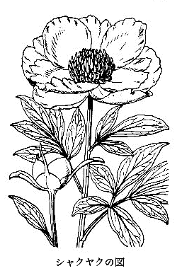
シャクヤクの図
スイセンは水仙を
音読した、そのスイセンが今日本の普通名となっているが、昔はわが
邦でこれを
雪中花と呼んだこともあった。
元来、
水仙は昔中国から日本へ渡ったものだが、しかし水仙の本国はけっして中国ではなく、大昔遠く
南欧の地中海地方の原産地からついに中国に
来り、そして中国から日本へ来たものだ。中国ではこの草が海辺を好んでよく育つというので、それで水仙と名づけたのである。仙は
仙人の仙で、この草を俗を脱している
仙人に
擬えたものでもあろうか。
水仙はヒガンバナ科に属して、その学名を Narcissus Tazetta
L. というのだが、この種名の Tazetta はイタリア名の
小皿の意で、すなわちその
花中の
黄色花冕を小皿に見立てたものである。そして属名の Narcissus は
麻痺の意で、それはその草に含まれているナルキッシネという毒成分に
基づいたものであろう。
水仙の花は早春に咲く。すなわち地中の
球根（球根は
俗言で正しくいえば
襲重鱗茎）から、葉と
共に
花茎（植物学上の語でいえば
）を
抽いて直立し、
茎頂に数花を
着けて横に向かっている。花には
小梗があり、もとの方にはこれを
擁して
膜質の
苞がある。そして
小梗の
頂に、緑色の
子房（植物学では
下位子房といわれる。
下位子房のある花はすこぶる多く、キュウリ、カボチャなどの
瓜類、キキョウの花、ナシの花、ラン類の花、アヤメ、カキツバタなどの花の子房はみな下位でいずれも花の下、すなわち花の外に
位している）があり、子房の上は
花筒となり、この花筒の
末端に白色の六
花蓋片が
平開し、花としての姿を見せよい
香を放っている。そしてこの六花蓋の
外列三片が
萼に当たり、
内列三片が
花弁である。
このように、花弁と
萼との外観が
見分け
難いものを、植物学では便利のため
花蓋と呼んでいる。この
開展せる
瑩白色花蓋六
片の中央に、
鮮黄色を呈せる
皿状花冕を
据え、花より放つ
佳香と
相まって、その花の
品位きわめて
高尚であることに、われらは
讃辞を
吝しまない。そしてこの
水仙の花を、中国人は
金盞銀台と呼んでいる。すなわち銀白色の花の中に、
黄金の
盞が
載っているとの形容である。
水仙花の
花筒の内部には、黄色の六
雄蕊があり、花筒の底からは一本の
花柱が立って、その
柱頭は三
岐しており、したがって
子房が三室になっていることを暗示している。そして
花下の子房の中には、
卵子が入っている。それにもかかわらず、この水仙には
絶えて実を結ばないこと、かのヒガンバナ、あるいはシャガと同様である。けれども
球根で
繁殖するから、実を結んでくれなくっても、いっこうになんらの不自由はない。そうしてみると、水仙の花はむだに咲いているから、もったいないことである。ちょうど、子を生まない女の人と同じだ。
水仙は花に
伴うて、通常は四枚、きわめて
肥えたものは八枚の葉が出る。
草質が厚く
白緑色を
呈しているが、毒分があるから、ニラなどのように食用にはならない。地中の球根を
搗きつぶせば強力な
糊となり、女の
乳癌の
腫れたのにつければ
効くといわれる。
元来、水仙は
海辺地方の植物であって、山地に
生える草ではない。
房州〔千葉県の南部〕、
相州〔神奈川県の一部〕、その他
諸州の海辺地には、それが
天然生のようになって
生えている。これはもと
人家に
栽培してあったものが、いつのまにかその球根が脱出して、ついに
野生になったもので、もとより日本の原産ではない。このように野生になっている所では、
玉玲瓏と中国で称する
八重咲きの花が見られる。また青花と呼ばれる下品な花も
現れる。
支那水仙といって、
能く（このような場合のヨクは能の字を書くのが本当で、近ごろのように
一点張りに良の字を書くのは
誤りである。これは can と good とを
混同視したものだ。チョット
老婆心までに。）
水盆に
載せて花を咲かせているものがあるが、これは人工で球根を
割き、多数の
花茎を
出させたものだ。けっして別種の水仙ではない。こんな球根への
細工は、その方法をもってすれば日本ででもできる。
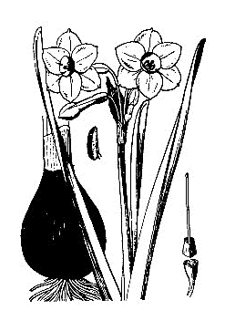
スイセンの図
キキョウは
漢名、すなわち中国名である桔梗の
音読で、これが
今日わが
邦での
通名となっている。昔はこれをアリノヒフキと
称えたが、この名ははやくに
廃れて今はいわない。また古くは
桔梗をオカトトキといったが、これもはやく
廃語となった。このオカトトキのオカは岡で、その
生えている場所を示し、トトキは朝鮮語でその草を示している。このトトキの語が、
今日なお日本の農民間に残って、ツリガネソウ一名ツリガネニンジン、すなわちいわゆる
沙参をそういっている。
右のオカトトキを昔はアサガオと呼んだとみえて、それが僧
昌住の
著したわが
邦最古の辞書である『
新撰字鏡』に
載っている。ゆえにこれを
根拠として、
山上憶良の
詠んだ万葉歌の秋の
七種の中のアサガオは、
桔梗だといわれている。今
人家に
栽培している
蔓草のアサガオは、ずっと後に
牽牛子として中国から来たもので、秋の
七種中のアサガオではけっしてないことを知っていなければならない。
キキョウはキキョウ科中
著名な一草で、Platycodon grandiflorum
A.
DC. の学名を有する。この属名の Platycodon はギリシア語の広い
鐘の意で、それはその広く口を
開けた形の
花冠に
基づいて名づけたものである。そして種名の grandiflorum は、大きな花の意である。
キキョウは
山野の
向陽地に生じている
宿根草であるが、その花がみごとであるから、観賞花草として
能く
人家に
栽えられてある。
茎は直立して、九〇ないし一五〇センチメートルばかりに達し、
傷つけると葉と
共に
白乳液が出る。葉は緑色で
裏面帯白、
葉形は
広卵形ないし
痩卵形で
尖り、
葉縁に
細鋸歯がある。ほとんど
無柄で
茎に
互生し、あるいは
擬対生し、あるいは
擬輪生する。
秋に
茎の上部
分枝し、
小枝端に五
裂せる
鐘形花を一
輪ずつ
着け、大きな
鮮紫色の
美花が咲くが、栽培品には
二重咲き花、白花、
淡黄花、
絞り花、大形花、小形花、奇形花がある。そしてその
蕾のまさに
綻びんとする
刹那のものは、
円く
膨らみ、今にもポンと音して
裂けなんとする姿を
呈している。
花中に五
雄蕊と五
柱頭ある一
花柱とがあるが、この
雄蕊は先に
熟して
花粉を散らし、
雌蕊に属する五柱頭は後に
熟して開くから、自分の花の花粉を受けることができず、そこで昆虫の助けを借りて、他の花の花粉を運んでもらうのである。つまり
桔梗花は、自家結婚ができないように、天から命ぜられているわけだ。植物界のいろいろな花には、こんなのがザラにある。花を研究してみると、なかなか興味のあるもので、ナデシコなどもその例に
漏れなく、もしも今昆虫が地球上におらなくなったら、植物で絶滅するものが続々とできる。
花の時の
子房は緑色で、その
上縁に
狭小な五
萼片がある。
花後、この
子房は成熟して果実となり、その上方の
小孔より黒色の種子が出る。
地中に直下する根は
多肉で、
桔梗根と称し
 痰剤
痰剤となるので、したがってこの
桔梗がたいせつな薬用植物の一つとなっている。春に
芽出つ
新葉の
苗は、食用として
美味である。
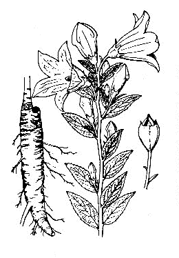
キキョウの図
リンドウというのは
漢名、龍胆の
唐音の
音転であって、今これが日本で、この草の通称となっている。中国の書物によれば、その葉は
龍葵のようで味が
胆のように
苦いから、それで
龍胆というのだと解釈してあるが、しかし葉が
苦いというよりは根の方がもっと
苦い、すなわちこの根からいわゆるゲンチアナチンキが製せられ、
健胃剤に使われている。
リンドウは昔ニガナといった。すなわち、その草の味が
苦いからであろう。また
播州〔兵庫県南部〕ではオコリオトシというそうだが、これもその草を
煎じて飲めば味が
苦いから、病気のオコリがオチル、すなわち
癒るというのであろう。また葉が
笹のようであるから、ササリンドウの名もある。
リンドウは
向陽の山地、もしくは原野の
草間に多く生ずる
宿根草で、
茎は三〇〜六〇センチメートルばかり、葉は
狭くて
尖り
無柄で茎を
抱いて
対生し、全辺で
葉中に三
縦脈があり、
元来緑色なれど、日を受けて
往々紫色に
染んでいる。秋
更けての
候、その花は
茎頂に集合して咲き、また
梢葉腋にも咲く。
花下に
緑萼があって、
尖った五つの
狭長片に分かれ、
花冠は大きな
筒をなし、口は五
裂して
副片がある。この
花冠は非常に日光に
敏感であるから、日が当たると開き、日がかげると
閉じる。
ゆえに
雨天の日は
終日開かなく、また夜中もむろん
閉じている。閉じるとその形が
筆の
頴の形をしていて
捩れたたんでいる。色は
藍紫色で外は往々
褐紫色を
呈しているが、まれに白花のものがある。
筒中に五
雄蕊と一
雌蕊とが見られる。
花後には、
宿存花冠の中で
長莢状の果実が
熟し、二つに
裂けて細かい種子が出る。このように果実が熟した後
茎は
枯れ行き、根は残るのである。
花は形が大きく
且つはなはだ
風情があり、ことにもろもろの花のなくなった
晩秋に咲くので、このうえもなく
懐かしく感じ、これを愛する気が
油然と
湧き出るのを禁じ得ない。されども、人々が野や山より移して庭に
栽植しないのはどうしたものか、やはり、野に置けれんげそうの類かとも思えども、しかしそう野でこれを楽しむ人もないようだ。
リンドウはリンドウ科に属し、わが
邦では本科中の代表者といってよい。そしてその学名は Gentiana scabra
Bunge var. Buergeri
Maxim. である。この学名中にある var. はラテン語 varietas（英語の variety）の略字で、変種ということである。
このリンドウ属（Gentiana）には、わが
邦に三十種以上の種類があるが、その中でアサマリンドウ、トウヤクリンドウ、オヤマリンドウ、ハルリンドウ、フデリンドウ、コケリンドウなどは著名な種類である。右のアサマリンドウは、
伊勢〔三重県〕の
朝熊山にあるから名づけたものだが、また
土佐〔高知県〕の
横倉山にも産する。
根の味が最も
苦く、
能く
振り出して
健胃のために
飲用するセンブリは、
一にトウヤクともいい、やはりこのリンドウ科に属すれど、これはリンドウ属のものではなく、まったく別属のもので、その学名を Swertia japonica
Makino といい、効力ある薬用植物として『日本薬局方』に登録せられている。秋に原野に行けば、採集ができる。
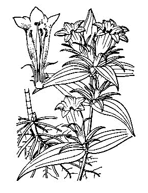
リンドウの図
アヤメといえば、だれでもアヤメ科中の Iris 属のものと思っているでしょう。それもそのはず、
今日ではアヤメと呼べば一般にそうなっているからだ。しかし厳格にいえば、このアヤメはまさにハナアヤメといわねばならぬものであった。なんとなれば、一方に本当のアヤメがあったからだ。とはいえ、この本当のアヤメの名は、実は今日ではすでに
廃れてそうはいわず、ただ
古歌などの上に残っているにすぎない運命となっているから、そう心配するにも
及ぶまい。
右に
古歌といったが、その古歌とはどんな歌か、今
試みに
数首を次に
挙げてみよう。
ほととぎす厭ふときなしあやめぐさ
かづらにせん日此ゆ鳴きわたれ
ほととぎす待てど来鳴かずあやめぐさ
玉に貫く日をいまだ遠みか
あやめぐさひく手もたゆくながき根の
いかであさかの沼に生ひけむ
ほととぎす鳴くやさつきのあやめぐさ
あやめも知らぬ恋もするかな
などがある。さてこの歌にあるアヤメグサ、すなわちアヤメは、ショウブすなわち
白菖のことである。（
世間一般に今ショウブと呼んでいる
水草を菖蒲と書くのは間違いで、菖蒲は実はセキショウの中国名である。ショウブの名はこの菖蒲から出たものではあれど、それは
元来は間違いであることをわきまえていなければならない。）そして前の Iris 属のハナアヤメとは、まったく違った草である。
昔、右のショウブをアヤメといっていた時代には、今の Iris 属のアヤメは、前記のとおりハナアヤメといって花を
冠していたが、ショウブに対するアヤメの名が
廃れた後は、単にアヤメと呼ぶようになり、これが
今日の通称となっている。すなわち
白菖がアヤメであった時は、
今日のアヤメがハナアヤメであったが、アヤメの名がショウブとなるに
及んで、ハナアヤメがアヤメとなり、時代により名称に
変遷のあったことを示している。
あまねく人の知っているかの
潮来節の
俚謡に、
潮来出島のまこもの中にあやめ咲くとはしおらしい
というのがある。この
謡はその中にあるアヤメがこんがらかって、ウソとマコトとで
織りなされている。すなわちこの
謡の作者は、
謡のアヤメを
美花の咲く Iris のアヤメとしているけれど、この Iris のアヤメは、けっして水中に
生えているマコモの中に咲くことはない。そしてこのアヤメは
陸草だから水中には育たない。マコモといっしょになって
生えている水草のアヤメは、
古名のアヤメで今のショウブのことであるから、これならマコモの中にいっしょに
生えていても、なにも別に
不思議はない。
サーことだ、
美花を開くアヤメはマコモの中にはなく、マコモの中に
生えているアヤメは、つまらぬ
不顕著な緑色の細かい花が、グロ的な
花穂をなしているにすぎなく、ふつうの人はあまりこの花を知っていないほどつまらぬ花だ。
上の
謡の「まこもの中にあやめ咲くとはしおらしい」のアヤメは、マコモの中に咲かなく、つまらぬ花を持った昔のアヤメ（ショウブ）が咲くばかりであるから、この
俚謡の意味がまったくめちゃくちゃになっている。
謡はきれいな謡だが、実物上からいえば、まったく事実を取り違えたつまらぬ
謡だ。はじめてその事実の
誤りを
摘発して世に発表したのは私であって、記事の題は、「実物上から
観た
潮来出島の
俚謡」であった。それはちょうど今から十六年前の、昭和八年のことだ。
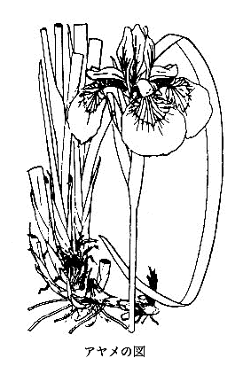
アヤメの図
アヤメを書いたついでに、それと同属のカキツバタについて述べてみよう。
カキツバタの語原は書きつけ花の意で、その
転訛である。すなわち、書きつけは
摺り
付けることで、その
花汁をもって布を
摺り
染めることである。昔はこのような染め方が行われて、カキツバタの花の
汁を
染料にしたのである。
その
証拠には『万葉集』に次の歌がある。
住吉の浅沢小野のかきつばた
衣に摺りつけ著む日知らずも
かきつばた衣に摺りつけ丈夫の
きそひ猟する月は来にけり
この二つの歌を見れば、カキツバタの花の
汁で布を
染めたことが
能くわかる。（こういう場合の「よく」を「良く」と書いてはいけない。）
今からおよそ十年
余りも前に、広島県
安芸の国〔県の西部〕の
北境なる
八幡村で、広さ数百メートルにわたるカキツバタの
野生群落に
出逢い、
折ふし六月で、花が一面に満開して
壮観を
極め、大いに
興を
催し、さっそくたくさんな花を
摘んで、その
紫汁でハンケチを
染め、また白シャツに
摺り
付けてみたら、たちまち
美麗に
染まって、大いに喜んだことがあった。その時、
興に
乗じて左の
拙句を
吐いてみた。
衣に摺りし昔の里かかきつばた
ハンケチに摺って見せけりかきつばた
白シャツに摺り付けて見るかきつばた
この里に業平来ればここも歌
見劣りのしぬる光淋屏風かな
見るほどに何となつかしかきつばた
去ぬは憂し散るを見果てんかきつばた
世人、イヤ歌読みでも、
俳人でも、また学者でも、カキツバタを燕子花と書いて
涼しい顔をして
納まりかえっているが、なんぞ知らん、燕子花はけっしてカキツバタではなく、これをそういうのは、とんでもない
誤りであることを
吾人は
覚らねばならない。
しからばすなわち燕子花とはなにか、燕子花の本物はキツネノボタン科に属するヒエンソウの一種で、オオヒエンソウ、すなわち Delphinium grandiflorum
L. と呼ぶ
陸生宿根草本で、
藍色の
美花を一
花穂に七、八花も開くものである。その
花形が、あたかも
燕が飛んでいるような
恰好から、それで燕子花の名がある。
茎は細長く、高さおよそ六〇センチメートル内外で立ち、葉は細かく分裂し
茎に
互生している。そしてこの草は中国の北地、ならびに満州〔中国の東北地方〕には広く
原野に生じているが、わが日本にはあえて産しない。
燕子花と同様な
大間違いをしているものは、紫陽花である。日本人はだれでもこの紫陽花をアジサイと信じ切っていれど、これもまことにおめでたい
間違いをしているのである。この紫陽花は、中国人でもそれが何であるか、その実物を知っていないほど不明な植物で、ただ中国の
白楽天の詩集に、わずかにその詩が
載っているにすぎないものである。
元来、アジサイは海岸植物のガクアジサイを親として、日本で
出生した花で、これはけっして中国物ではないことは、われら植物研究者は
能くその
如何を知っているのである。
カキツバタは水辺、ならびに
湿地の
宿根草で、この属中一番
鮮美な紫花を開くものである。葉は
叢生し、
鮮緑色で
幅広く、
扇形に
排列している。
初夏の
候、
葉中から
茎を
抽いて
茎梢に花を
着ける。花のもとに二、三片の大きな
緑苞があって、中に三個の
蕾を
擁し、一日に一
花ずつ咲き
出でる。
花は
花下に緑色の
下位子房があり、
幅広い
萼三片が
垂れて、花を美しく
派手やかに見せており、狭い
花弁三片が直立し、アヤメの花と同じ
様子をしている。花中の
花柱は大きく三
岐し、その
端に
柱頭があり、その三
岐片の下には白色
葯の
雄蕊を隠している。この花も同属のアヤメ、ハナショウブ、イチハツなどと同じく
虫媒花で、昆虫により
雄蕊の花粉が柱頭に伝えられる。花がすむと
子房が増大し、ついに
長楕円状円柱形の果実となり
開裂して種子が出るが、
果内は三室に分かれている。
花色は紫のものが普通品だが、また栽培品にはまれに白花のもの、
白地に
紫斑のものもある。きわめてまれに
萼、花弁が六
片になった異品がある。
学名を Iris laevigata
Fisch. と称するが、その種名の laevigata は
光沢あって
平滑な意で、それはその葉に
基づいて名づけたものであろう。そして属名の Iris は
虹の意で、それは属中多くの花が
美麗ないろいろの色に咲くから、これを虹にたとえたものだ。
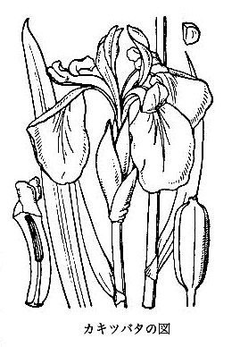
カキツバタの図
『万葉集』に「
託馬野に生ふる
紫草衣に染め、いまだ着ずして色に
出でけり」という歌があって、この時分
染料として、ふつうに
紫草を使っていたことを示している。
ムラサキは日本の名で、
紫草は中国の名である。根が紫色で、紫を
染める染料となるので、この名がある。そしてその学名は Lithospermum erythrorhizon
Sieb.
et Zucc. である。すなわちこの種名の erythrorhizon は、字からいえば
赤根の意であるが、その意味からいえば
紫根の意と解せられる。属名の Lithospermum は石の
種子の意で、この属の果実が、石のように
堅い種子のように見えるから、それでこんな字を用いたものだ。
このムラサキは、
山野向陽の草中に生じている
宿根草で、根は
肥厚していて地中に直下し、単一、あるいは
枝分かれがしている。そしてその
根皮が、
生時は
暗紫色を
呈している。
茎は直立して六〇〜九〇センチメートルに成長し、
梢はまばらに
分枝している。葉は
披針形で
尖り、
無柄で
茎に
互生し茎と
共に毛があり、
葉面は
白緑色を
呈している。
梢枝には
苞葉があって、その
苞腋に一
輪ずつの小さい白花が咲くから、緑色の草中にあってちょっと目につく。花のもとの
緑萼は五
尖裂し、
花冠は
高盆形で
花面五
裂し
輻状をなしている。
花筒内に五
雄蕊と一
雌蕊とがあり、
花柱のもとに
四耳をなした
子房がある。
果実は
小粒状の
堅い
分果で、灰色を
呈して
光沢があり、
蒔けば
能く
生えるから、このムラサキを栽培することは、あえて
難事ではない。ゆえに
往時は、これを畑に作ったことがあった。
野生のものはそうザラにはないから、
染料に使うためには、
是非ともこれを作らねばならぬ必要があったのである。そしてこの
紫根の上等品は染料の方へ
回し、下等品を薬用の方へ回したものだそうな。
昔は紫の色はみな
紫根で
染めた。これがすなわち、いわゆる
紫根染めである。今はアニリン
染料に
圧倒せられて、
紫根染めを見ることはきわめてまれとなっている。私は先年、秋田県の
花輪町の
染め
物屋に
頼んで、
絹地にこの
紫根染めをしてもらったが、なかなかゆかしい
地色ができ、これを娘の
羽織に仕立てた。今それをアニリン
染料の紫に
比ぶれば、
地色が
派手でないから、
玄人が見れば
凝っているが、
素人の前では損をするわけだ。私はさらに同
染め
物屋で
茜染めもしてもらったが、
茜染めの色は赤味がかったオレンジ色であるから、あまり引き立たないが、なんとなく上品である。そしてこの
紫根染めも
茜染めもいろいろの
模様を置くことができず、みな
絞り
染めである。
ムラサキと
武蔵野はつきものであるが、
今日武蔵野にはムラサキは生じていない。しかし昔はそれがあったものと見えて、「紫の一もとゆえに武蔵野の、草はみながら
憐れとぞ見る」という有名な歌が
遺っている。
ムラサキを
採りたい人は、富士山の
裾野へ行けば、どこかで見つかるであろう。
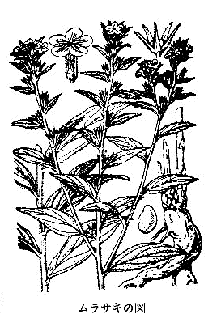
ムラサキの図
春の野といえば、すぐにスミレが連想せられる。実際スミレは春の野に咲く花であるが、しかし人家の庭には栽培してはいない。万葉歌の中にはスミレが出ているから、
歌人はこれに関心を持っていたことがわかる。すなわちその歌は、「春の
野にすみれ
摘みにと
来し
吾ぞ、
野をなつかしみ
一夜宿にける」である。
スミレは今、いろいろのスミレの種類を総称するような名ともなっていれど、その中で特にスミレというのは、スミレ品類中一等優品で、
濃紫色の花を開く
無茎性叢生種の名であって、これを学名では、Viola mandshurica
W.
Beck. といっている。満州〔中国の東北地方一帯〕にも産するので、それで mandshurica（「満州の」という意味）の種名がついている。
そして日本にはスミレの品種が実に百種ほど（変種を入れるとこれ以上）もあって、これがみなスミレ属 Viola に属する。これによってこれを
観れば、日本は実にスミレ品種では世界の一等国といってよい。
スミレ、すなわち Viola mandshurica
W.
Beck. は
宿根草で、葉は一
株に
叢生し
長葉柄があり、
葉面は長形で
鈍鋸歯がある。葉と同じ
株から
花茎を
抽いて花が咲くのだが、花は
茎頂に一
輪着き、
側方に向こうて開いている。
花茎にはかならずその途中に
狭長な
苞がほとんど
対生して
着いており、花には緑色の五
萼片と、色のある五
花弁と、五
雄蕊と、一
雌蕊とがある。
花茎は一株から一、二本、
肥えた株では十本余りも出ることがある。そして
濃紫色の花が、いつも
人目を
惹くのである。
五
片の花弁中、下方の一花弁には、
後ろに突き出た
距と称するものを持っている。
元来、このスミレの花は
虫媒花なれども、
今日ではたいていのスミレ類は果実が
稔らない。そして花の
済んだ後に、
微小なる
閉鎖花がしきりに生じて
自家受精をなし、
能く果実ができる特性がある。ゆえにスミレの
美花はまったくむだに咲いているわけだ。しかしここにいう Viola mandshurica
W.
Beck. のスミレは、その
常花の後で
能く果実の
稔っているものを見かけることがある。このスミレもその後では、しきりと
閉鎖花によっての果実が続々とできるのである。
いったい、スミレの花は昆虫に対し、とても
巧妙にできている。まず花は
側方に向いているので、昆虫が来て止まるに
都合がよい。花弁は上の方に二
片、両側に二片、下の方に一片がある。そしてこの一片の後方に一つの
距のあることは、前に記したとおりである。
花が開いていると、たちまち
蜜蜂のごとき昆虫の訪問がある。それは花の
後ろにある
距の中の
蜜を吸いに来たお客様である。さっそく自分の頭を花中へ突き入れる。そしてその
嘴を
距の中へ突き込むと、その
距の中に二つの
梃子のようなものが出ていてそれに
触れる。この
梃子ようのものは、五
雄蕊中の下の二
雄蕊から突き出たもので、昆虫の
嘴がこれに
触れてそれを動かすために、
雄蕊の
葯が動き、その
葯からさらさらとした
油気のない花粉が落ちて来て、昆虫の毛のある頭へ降りかかる。
そしてこの昆虫がよい
加減蜜を吸うたうえは、頭に花粉をつけたままこの花を
辞し去って他の花へ行く。そして同じく花中へ頭を突き込む。その時、前の花から頭へつけて来た花粉を今度の花の
花柱、それはちょうど昆虫の頭のところへ出て来ている花柱の
末端の
柱頭へつける。この柱頭には
粘液が出ていて、持って来た花粉がそれに
粘着する。花粉が粘着すると、さっそく花粉管が花粉より
延び出て、花柱の中を通って
子房の中の
卵子に達し、それから卵子が生長して種子となるが、それと同時に子房は成熟して果実となるのである。
実にスミレ類は、このように昆虫とは縁の深い関係になっているのである。しかしかく昆虫に努力させても、花が果実を結ばず
無駄咲きをしているものが多いのは、まことにもったいなき
次第である。それはちょうど
水仙の花、ヒガンバナの花などと同じ
趣である。
スミレの葉は
花後に出るものは、だんだんとその大きさを増し、形も長三角形となって花の時の葉とはだいぶ形が違ってくる。
スミレの果実は三
殻片からなっているので、それが
開裂するとまったく三つの
殻片に分かれる。そしてその各
殻片内に二列に
並ぶ種子を持っている。
殻片が開いたその際は、その種子があたかも舟に乗ったように並んでいるのだが、その
殻片がだんだん
乾くと、その両縁が内方に向こうて
収縮、すなわち押し
狭められ、ついにその種子を
圧迫して急に押し出し、それを遠くへ飛ばすのである。なんの必要があってかく飛ばすのか、それは広く遠近の地面へ
苗を
生えさせんがためなのである。
またそれのみならず、その種子には
肉阜（カルンクル）と呼ぶ
軟肉が
着いていて、これが
蟻の食物になるものだから、その地面に
転がっている種子を
蟻が見つけると、みなそれをわが
巣に運び入れ、すなわちその
軟肉を食い、その
堅い種子をばもはや不用として巣の外へ出し捨てるのである。この出された種子は、その巣の辺で
発芽するか、あるいは
雨水に流され、あるいは風に飛んで、その落ちつく先で発芽する。かくてそのスミレがそこここに
繁殖することになる。このように、この
肉阜が
着いている種子はクサノオウ、キケマン、タケニグサなどのものもみなそうで、いずれもみな
蟻へのごちそうを持っているわけだ。かく植物界のことに気をつけると、なかなかおもしろい
事柄が見いだされるのである。
春いちはやく紫の花が咲くスミレにツボスミレ（
今日の植物界ではこれをタチツボスミレといっていれど、これは
畢竟不用な名でツボスミレが昔からの本名である）というものがある。このツボスミレもはやく歌人の目にとまり、万葉の歌に
山ぶきの咲きたる野辺のつぼすみれ
この春の雨にさかりなりけり
茅花抜く浅茅が原のつぼすみれ
いまさかりなり吾が恋ふらくは
がある。このツボスミレは前記のとおり紫花の咲くスミレで、他のスミレよりは早く開花する。
野辺ではこのツボスミレが最も早く咲き、
且つたくさんに咲くので、そこで歌人の心を
惹きつけたのであろう。ツボスミレは
壺（
内庭のこと）スミレ、すなわち庭スミレの意である。花の
後ろの
距が
壺の形をしているからツボスミレという、という古い説はなんら取るに
足らない
僻事である。
昔から菫の字をスミレだとしているのは、このうえもない大間違いで、菫はなんらスミレとは関係はない。いくら中国の
字典を引いて見ても、菫をスミレとする解説はいっこうにない。昔の日本の学者が何に
戸惑うたか、これをスミレだというのはばからしいことである。それを昔から
今日に至るまでのいっさいの日本人が、古い一人の学者にそう
瞞着せられていたのは、そのおめでたさ
加減、マーなんということだろう。
菫という植物は
元来、
圃に作る
蔬菜の名であって、また
菫菜とも、
旱菫とも、
旱芹ともいわれている。中国でも作っていれば、また朝鮮にも栽培せられて食用にしている。植物学上の所属はカラカサバナ科で、その学名は Apium graveolens
L. である。これは西洋でも食用のため作られていて、かのセロリ（Celery）がそれである。
今日ではこの
和名をオランダミツバというから、すなわち菫は
確かにオランダミツバとせねばならなく、それがけっしてスミレではないことを、だれでも承知していなければならない。昔
文禄・
慶長の
役の時、加藤
清正が朝鮮からこの種子を持って来たというので、このオランダミツバに昔キヨマサニンジンの名があった。
パンジーはスミレ属の一種で、
三色スミレと呼ばれる。すなわち、一花に三つの色があるというのである。
スイート・バイオレットはニオイスミレで園芸品となっている。通常紫色の花が咲き、
香いが高いから、
香気を
好く西洋人に大いに
貴ばれている。いったい日本人は花の
香いに
冷淡で、あまり興味を
惹かないようだが、西洋人と中国人とはこれに反して非常に
花香を
尊重する。かの
素馨〔ジャスミン〕などは大いに中国人に好かれる花の一つで、市場で売っており、
薔薇の
 瑰
瑰（日本の学者はハマナシ、すなわち誤っていうハマナスを
瑰としていれど、それはむろん誤りである）も同国人に
貴ばれ、その花に
佳香があるので茶に入れられる。ゆえに Tea rose の名がある。
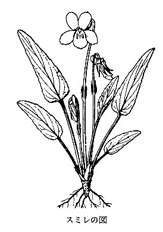
スミレの図
サクラソウはよく人の知っている
花草で、どんな人にでも愛せられる。またその名もよくつけたもので、まことにその花にふさわしい名称である。通常桜草と書いてあるが、これはもとより中国名すなわち漢名ではなく、単にサクラソウを漢字で書いたものたるにすぎなく、サクラソウには中国名はない。
そしてその学名は Primula Sieboldi
Morren forma spontanea
Takeda. であるが、この学名の中にある forma は品の義でその変わり品を示しており、spontanea は
自生の意、種名の Sieboldi はかの有名なシーボルトの人名であり、属名の Primula は最初の義で、
畢竟花の
早咲きを意味したものである。
サクラソウは平野に生ずるが、また山の高原地にも見られる。しかしそう
普遍的にどこにもあるものではない。東京付近では、かの
田島の原にたくさん咲くので、そこは天然記念物に指定せられている。また信州〔長野県〕軽井沢の原にもあり、また遠く九州
豊後〔大分県〕の
日田地方にもあるといわれている。
宿根草で、これを人家の庭に
栽えても
能く育ち、毎年花が咲いてかわいらしい。葉は一
株から二、三枚ほど
出でて毛がある。長い
葉柄を
具え、
葉面は
楕円形で
重鋸歯があり、
葉質は
軟らかくて
皺がある。四月ごろ
花茎が葉よりは高く立ち、
茎頂に
繖形をなして
小梗ある数花が咲く。
花下に五
裂せる
緑萼があり、
花冠は
高盆形で下は
花筒となり、
平開せる
花面は五
片に分かれ、各片の
頂は二
裂していて、その状すこぶるサクラの花に
彷彿している。花の直径はおよそ二センチメートルばかりで、花色は
紅紫色であるが、たまに白花のものに
出逢う。
花筒内には五
雄蕊と一
雌蕊とがあって、雌蕊のもとに一
子房がある。
このサクラソウの園芸的培養品にはおよそ二、三百の変わり品があって、みなこれまでの熱心な園芸家により、苦心して作り出されたものである。これは世界中に類のないもので、大いにわが
邦の
誇りとするに
足る花である。
ここに最も興味のあることは、このサクラソウ（同属の他の種も同様）の花には二様の差があって、それが株によって異なっている事実である。すなわち一方の花は五つの
雄蕊が
花筒の入口直下についていて、その
雌蕊の
花柱は短い。また一方の花は
雄蕊が
花筒の中途についていて、その花柱は長く花筒の口に達している。すなわち前者は
高雄蕊短花柱の花であり、後者は
低雄蕊長花柱の花である。
ゆえにこれらの花は自分の花粉を自分の
柱頭に伝うることができず、
是非ともそれを持ってきてくれる何者かに
依頼せねばならないように、自然がそう
鉄則を
設けている。まことに不自由な花のようだが、実はそれがそう不自由でないのはおもしろいことではないか。なんとなれば、そこには花粉の
橋渡し役を
勤めるものがあって、
断えずこの花を
訪れるからである。そしてその訪問者は
蝶々である。花の上を飛び
回っている蝶々は、ときどき花に止まって
仲人となっているのである。
今、
蝶が来て
高雄蕊低花柱の花に止まったとする。すなわちその長い
嘴をさっそく花に差し込んで、
花底の
蜜を吸う。その時その
嘴に
高雄蕊の花粉をつける。次にこの蝶が
低雄蕊高花柱の花に行き、その
嘴を花に差し込む。そうすると
低雄蕊の花粉がその
嘴に付着するばかりでなく、前の花の高雄蕊からつけて来た花粉を
高花柱の
柱頭につける。また右の低雄蕊の花からその低雄蕊の花粉をつけて来た蝶は、その花粉を
低花柱の柱頭につける。
このようにその花の受精するのは、どうしても他の花から花粉を持って来てもらわぬ限りそれができないから、自分の花粉で自分の花の受精作用はまったく不可能である。
他花の花粉で、自分の花の受精作用を行わんがために、このサクラソウの花は
雄蕊の位置に上下があり、
雌蕊の花柱に長短を生じさせているのである。
天然の
細工は
流々、まことに
巧妙というべきではないか。こうなると他家結婚ができ、したがって強力な種子が生じ、
子孫繁殖には最も有利である。
植物でも自家受精、すなわち自家結婚だと自然種子が弱いので、そこで他家受精すなわち他家結婚して
強壮な種子を作ろうというのだ。植物でこんな
工夫をしているのはまことに
感嘆に
値する。今それを人間にたとうれば、同族結婚を
避けて他族結婚をしたこととなる。実際
縁の近い人同士の結婚はあまり有利でなく、これに反して縁の遠い人同士の結婚が有利である。それゆえイトコ同士の結婚などはあまり
褒むべきものではなく、
強健な子供を
欲しいと思えば、縁類でない他の家から嫁をもらうべきである。前述のとおりサクラソウでさえ、自家結婚を避けて他家結婚を
歓迎しているではないか。言い古した言葉だが、「人にして草に
如かざるべけんや」である。
日本にはサクラソウ属の種類がおよそ三十種ばかりもあるが、その中で一番りっぱで大きな形のものはクリンソウで、これは世界中でも有名なものである。温室内にあるサクラソウ類には中国産のものが多く、シナサクラソウ、オトメザクラ、ハルコザクラなどはその名が高い。とにかく、観賞花としてサクラソウの類は、
上乗なものである。
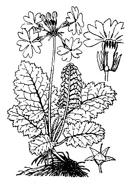
サクラソウの図
ヒマワリは一名ヒグルマ、一名ニチリンソウ、一名ヒュウガアオイと呼ばれ、アメリカ合衆国の原産であるが、はやくに広く世界に広まり、諸国で
栽培せられている。そしてわが
邦へはけだし、昔中国からそれを伝えたものであろう。今はわが国内でもあまねく諸州で作られている。通常は観賞花草として
栽えられているばかりで、その実を食らい、あるいはそれから油を
搾るなどのことはやっていないようだ。つまり有用植物としては
顧みられないでいる。
世人は一般に、ヒマワリの花が日に向こうて
回るということを信じているが、それはまったく誤りであった。先年私が初めてこれを
看破し、「日まわり日に
回らず」と題して当時の新聞や雑誌などに書いたことがあった。つまりヒマワリの花は側方に
傾いて咲いてはいれど、日に向こうてはいっこうに動かないことは、実地についてヒマワリの花を朝から夕まで見つめていれば、すぐにその真相がわかり、まったくくたびれもうけにおわるほかはない。
このヒマワリの花が日光を追うて回るということは、もと中国の書物から来たものだ。それは『
秘伝花鏡』という書物に次のとおり書いてある。すなわち、
「
向日葵、
毎幹の
頂上に
只一花あり、
黄弁大心、
其の形
盤の
如く、太陽に
随いて回転す、
如し日が東に
昇れば
則ち花は東に
朝う、日が天に
中すれば
則ち花
直ちに上に
朝う、日が西に
沈めば
則ち花は西に
朝う」
である。これが、ヒマワリの日に向こうて回転する、という中国での説である。
ヒマワリはキク科に属する一年生
草本で、その学名を Helianthus annuus
L. と称し、俗に Sunflower といわれている。すなわち太陽花、すなわち
日輪花である。右属名の Helianthus は、これまた同じく Sunflower と同義で
日輪花を意味し、種名の annuus は一年生植物の義である。なぜこの花を
日輪、すなわち太陽にたとえたかというと、あの大きな黄色の
花盤を太陽の面とし、その周辺に
射出している舌状花弁を、その光線に
擬えたものだ。
中央に広く
陣取って
並んでいる
管状小花は、その
平坦な
花托面を
覆い
埋め、下に
下位子房を
具え、
花冠は管状をなして、その口五
裂し、そして管状内には
集葯的に連合した五
雄蕊があり、中央に一本の
花柱があって右の
葯内を通り、その
柱頭は二
岐している。花の
後には
子房が成熟して果実となり、果中に一種子があり、種皮の中には二
子葉を有する
胚がある。春にこの種子を
播けば
能く生ずる。はじめ緑色の二枚の
子葉が開展し、その中央から
茎が出て葉を
着ける。そしてその胚には油を
含んでいる。
茎は巨大で、高さが二メートル以上にも達し、あたかも棒のようである。
葉は広くて、
長葉柄を
具え、茎に
互生しており、
広卵形で三大脈を有して、
葉縁に
粗鋸歯があり、
茎と
共にざらついている。
茎の
頂に一花あるものもあれば、また
分枝してその各
枝端に一
輪ずつの花を
着けるものもある。また品種によって花に大小があり、その大なるものは直径およそ二十センチメートルばかりもあろう。
このヒマワリの花は、他のキク科植物と同じく集合花で、そのおのおのを学問上で
小花と称する。すなわち、この小花が集まって一輪の花を形作っている。こんな集合花を、植物学上で
頭状花と称する。キク科の花はいずれもみな頭状花である。つまり
寄り合い
世帯、すなわち一の社会を組み立ている花である。そしてこの寄り合い世帯には、分業が行われてたいへんにこの花に利益をもたらし、それがためにたくさんな種子がよく
稔ることになっている。
ヒマワリの花は
虫媒花である。昆虫が花の
蜜を
吸いに来て、
花盤面にあるたくさんな小花の上を
這い回ると、花が一度に
受精する
巧妙な仕組みになっている。これは他のキク科植物も同様である。
右に分業といったが、すなわち、
花盤上にある小花はもっぱら生殖を
司り、周辺にある
舌状小花は、昆虫に対する
目印の
看板と
併せて生殖を
担当している。こんな分業などが
能く行われ、
且つ受精が
巧妙に
行きわたり、また種子の
分布も
巧みなので、キク科植物は地球上で最も進歩発達した花である、と評価せられている。そしてキク科植物は、他のいずれの科のものよりも
勝ってたくさんな種類を含み、はなはだ優勢である。
ヒマワリの
姉妹品にキクイモがあって同属に列する。その学名を Helianthus tuberosus
L.（この種名は
塊茎を有する意）と称し、俗に Girasole または Jerusalem artichoke と呼び、やはりアメリカ合衆国ならびにカナダがその原産地である。地中にジャガイモ（
馬鈴薯というは大間違い）のような
塊茎が生じて食用になるのだが、それにまったく
澱粉はなく、ただイヌリン（ゴボウと同様）があるのみである。味は
淡白であって
美味くないから、だれも食料として
歓迎しない。しかれども方法をもってすれば、
砂糖が製せられるから捨てたものではない。
 ヒマワリの図
ヒマワリの図
中国に百合という一種のユリがあって、白い花が咲く。これは中国の特産であって、日本には見ることがない。そして百合は、
独りこの白花ユリ（Lilium sp. 種名未詳）の専有する特名である。
百合とは、その地下の球根（植物学上でいえば
鱗茎）に多くの
鱗片があって
層々と重なっているから、それでそう百合というとのことである。
ところが日本の諸学者はだれでも百合はササユリ（学名は Lilium Makinoi
Koidz.）であるといっている。しかしササユリは、日本の特産で中国には産しないから、もとよりこのユリに中国名の百合の名があるわけはない。この一点をもってしても、ササユリが百合ではないことが
判る。そして日本ではなお百合をユリの総名のように思っており、ユリといえばよく百合と書いているが、それはまったく間違っている。
日本産のユリには多くの種類があれども、一つも百合に当たるものはない。ゆえに百合を、日本のいずれのユリにも、それに対して用いてはならない。
世間の女の子によく百合子があるが、これは正しい書き方ではない。ゆえにユリコといいたければ、
仮名でユリ子と書けば問題はないことになる。
右のような
次第だから、実を言えば、百合の字面を日本のユリからは
追放すべきもので、ユリの名はその語原がまったく不明である。また昔はユリをサイといったらしいが、これもその語原がわからない。しかしユリの想像語原では、ユリの
茎が高く
延びて重たげに花が咲き、それに風が当たるとその花が
揺れるから、それでユリというのだ、といっていることがある。
ユリの諸種はみな
宿根草である。地下に
鱗茎（俗にいう球根）があって、これが生命の
源となっている。すなわち
茎葉は
枯れても、この部はいつまでも生きていて死なない。
右、
鱗茎は白色、あるいは黄色の
鱗片が
相重なって
成っているが、この
鱗片は実は葉の変形したものである。そして地中で養分を
貯えている役目をしているから、それで
多肉となり、多量の
澱粉を含んでいる
御蔵をなしているが、それを人が食用とするのである。右の鱗片が
相擁して
塊り、球をなしているその球の下に
叢生して
鬚状をなしているものが、ユリの本当の根である。そしてなお
鱗茎から出ている一本の
茎にも、その地中部には真の根が
横出して
生えている。
茎は
鱗茎、すなわち球根から一本
出でて直立し、
狭長な葉がたくさんそれに
互生している。
茎の
梢は多くは
分枝して花を
着けているが、花はみな美しくて
香気のあるものが少なくない。そして花は
上向きに咲くものもあれば、横向きに咲くものもあり、また下向きに咲くものもあって、みな
小梗を有している。
花は
花蓋（
萼、花弁同様な姿をしているものを、
便宜のため植物学上では
花蓋と呼んでいる）が六
片あるが、それが内外二列をなしており、その外列の三片が
萼片であり、内列の三片が花弁である。そしてそのもとの方の内面には、よく
蜜が
分泌せられているのが見られる。六本の
雄蕊があって、おのおのが
花蓋片の前に立っており、長い
花糸の先にはブラブラと動く
葯があって、たくさんな花粉を出している。この花粉には色があって、それが着物に
着くと、なかなかその色が落ちないので困る。ゆえに、人によりユリの花を
嫌うことがある。
花の底には一つの緑色の
子房が立っており、その
頂に一本の長い
花柱があり、その
末端はすなわち
柱頭で
三耳形を
呈し、
粘滑で花粉を受けるに
都合よくできている。右のように花の中にある
子房をば、植物学上では
上位子房といっている。
ユリの花は
著しい
虫媒花で、主として
蝶々が花を
目当てに
頻々と訪問する
常得意である。それで
美麗な
花色が虫を呼ぶ
看板となっており、その
花香もまた虫を
誘う一つの
手引きを
務めている。訪問客、すなわち蝶々はその長い
嘴を花中へ差し込み、
花蓋のもとの方の内面に
分泌している
蜜を
吸うのである。その時、その虫の体も
嘴も
葯に
触れて、その花粉を体や
嘴に
着ける。そして他の花へ飛びあるいた時、その
着けて来た花粉を
粘着する
雌蕊の
柱頭へ、知らず知らず
着けるのである。すなわち蝶と花とが、利益の
交換をやっているわけだ。こうしてユリは
子房の中の
卵子が
孕み、のち種子となって、子孫を
継ぐ
基をなすのである。
たくさんあるユリの種類の中で、最もふつうで人に知られているものが、オニユリである。これは中国にも産し、
巻丹の名がある。それは
花蓋片が
反巻し、
且つ
丹いからである。このオニユリの球根、すなわち
鱗茎は白色で食用になるのであるが、少しく
苦味がある。このユリの
特徴は
葉腋に
珠芽が生ずることである。これが地に落ちれば、そこに
仔苗が生ずるから
繁殖さすには
都合がよい。
またこのオニユリは
往々圃に作ってあるが、なお諸処に
野生もある。おもしろいことには東京地方へ旅行すると、農家の大きな
藁葺屋根の高い
棟にオニユリが
幾株も
生えて花を咲かせている
風情である。オニユリの花は通常
一重であるが、時に
八重咲きのものが見られ、これを
八重天蓋と称するが、テンガイユリはオニユリの一名である。
ヤマユリはりっぱなユリであって、関東諸国に
野生し、また人家にも作られている。大きな花が咲き、その
満開の時はよく
香う。その
花蓋片は
元来は白色だが、片面に
褐赤色の
斑点がある。
花蓋片の中央
紅色の深いものはベニスジユリと
唱え
珍重せられるが、これは園芸的の品である。ハクオウというのは、
花蓋片が白くて
斑点なく中央に
黄筋の通っているもので、これも園芸品である。
ヤマユリの球根は、食用として
上乗なものである。ゆえに
古より、料理ユリの名がある。またその産地に
基づいてヨシノユリ、ホウライジユリ、エイザンユリ、ウキシマユリの名がある。
元来、ヤマユリの名は、ササユリの一名であるところのヤマユリの名と重複するので、今のヤマユリは、これをヨシノユリか、あるいはリョウリユリと呼んだならきわめてよいと思われる。ヤマユリの名は、なんとなく
土臭い感じがして、いっこうに上品に聞こえない。
このヤマユリは日本の特産で、中国にはないから、したがって中国名はない。日本の学者は『
汝南圃史』という中国の書物にある天香百合をヤマユリだとしていれど、それはむろん誤りである。
ヤマユリは、輸出向きには一等重要なユリである。従来非常にたくさんなこのユリ根が外国に輸出せられたが、これからも
漸次にその
盛況を見るに至るであろう。
ササユリは、関西諸州の山地には多く
野生しているが、関東地方には
絶えてない。しかし関西の地でも、あまり人家には作っていない。
茎は九〇〜一二〇センチメートルに成長して立ち、なんとなく上品な色を
呈し、花も
淡紅色で、すこぶる
優雅である。前記のとおり、このユリにもヤマユリの名があり、またサユリという名もある。サユリはサツキユリの略されたもので、それは
早月（旧暦の五月、
今日では六月に当たる）のころに花が咲くからそういうのである。
カノコユリは、きわめて
華美な花が咲く。花色
紅赤色で、
濃紅色の点がある。日本のユリ中、最も
優れた花色を
呈している。このユリは四国、九州には野生があって、いつも
断崖の所に生じている。ゆえにその
茎は向こうに突き
出で、あたかも
釣竿を差し出したようになっており、その先に花が下向いて咲いている。ゆえに
土佐〔高知県〕では、これをタキユリというのだが、同国では
断崖をタキと称するからである。変種に白花の品と
淡紅色の品とがあって、その淡紅色のものをアケボノユリ（新称）といい、白花のものをシラタマユリと呼んでいる。これは
共に園芸品である。
テッポウユリは沖繩方面の原産で、
筒の形をした純白の花が横向きに咲き、
香気が高い。このユリを
筑前〔福岡県北東部〕では、タカサゴと呼ぶことが書物に出ている。そしてこのテッポウユリは、輸出ユリとして
著名なもので、その球根が大量に外国に出て行く。
サクユリは、
伊豆七島における
八丈島の南にある小島青ヶ島の原産で、日本のユリ中、最も巨大なものである。花は純白で
香気強く、実にみごとなユリで、この属中の王様である。球根もきわめて大きく、
鱗片も大形で肉厚く黄色を
呈し、食用ユリとしても上位を
占むるものといってよろしい。
スカシユリは、ふつうに
栽培して花を咲かせていて、その花色には赤、黄、
樺〔赤みを
帯びた黄色〕などがある。花は上向きに咲き、
花蓋片のもとの方がたがいに
透いているので、スカシユリの名がある。諸国の海岸に
野生しているユリに、ソトガハマユリとも、テンモクユリとも、ハマユリとも、またイワトユリともいう
樺色花のユリがあるが、これは右スカシユリの原種である。東京付近では
房州〔千葉県の南部〕、
相州〔神奈川県〕、
豆州〔伊豆半島と伊豆七島〕へ行けば得られる。
コオニユリは、オニユリに似て小さいというのでこの名があるが、一にスゲユリともいわれる。それは葉が
狭長だからである。山地
向陽の草中に野生し、オニユリのごとき
丹赤色の花が咲き、
暗褐色の
斑点がある。球根は食用によろしい。
ヒメユリはその名の示すごとく
可憐なユリである。関西地方から九州にかけて山野に野生があるが、そう多くはない。
茎は六〇〜九〇センチメートルに立ち、
狭葉を
互生し、
梢に少数の枝を分かちて、きわめて
美麗な真赤色の花が上向きに咲く。この一変種に、コヒメユリというのがある。
茎は細長く花は
茎末に一、二
輪咲く。この品は野生はなく、まったく園芸品である。
クルマユリは、その葉が
車輪状をなしているので、この名がある。花は
茎梢に一花ないし数花
点頭して咲き、
反巻せる
花蓋面に暗点がある。
高山植物の一つであるが、
羽前〔山形県〕の
飛島に
生えているのは珍しいことである。
右のほかヒメサユリ、タケシマユリ、タツタユリ、ハカタユリ、カサユリなどの種類がある。ウバユリというのは
異彩を放ったユリで、もとはユリ属（Lilium）に入れてあったが、私はこれをユリ属から独立させて、Cardiocrinum なる別属のものとしている。その葉はユリの諸種とは違い、
広闊なる心臓形で
網状脈を有し、花は一茎に数花横向きに開き、
緑白色で左右相称状になっている。
鱗茎の
鱗片もきわめて少なく、花が咲くとその
鱗茎は
腐死し、その側に一、二の
仔苗を残すにすぎない特状がある。この属のもの日本に二種、一はウバユリ、二はオオウバユリである。インド・ヒマラヤ山地方に産する偉大なウバユリ、すなわちヒマラヤウバユリもこの属に属する。
輸出ユリとしては日本が第一で、年々たくさんな球根が海外へ出ていたが、戦争で
頓挫していたけれども、これからふたたび、前日のような
盛況を見るであろうことは
請け合いで、わが
邦園芸界のために、大いに
祝してよろしい。その輸出ユリの第一はヤマユリ、次がテッポウユリ、次がカノコユリという順序だろう。これらのユリは、日本でなるべくその球根を大きくなるように
培養して、その球根を輸出する。先方ではそれを一年作って、さらにその大きさを増さしめ、そして
次年に
勢いよく花を咲かせてその花を
賞翫する。花が咲いた後、弱った球根は捨てて
顧みない。
ゆえに
年々歳々日本から
断えず輸入する必要があるので、この貿易は向こうの人の花の
嗜好が変わらぬ以上いつまでも続くわけで、日本はまことにまたと得がたい良い得意先を持ったものだ。また、良いユリをも持ったものだ。
万歳万歳。
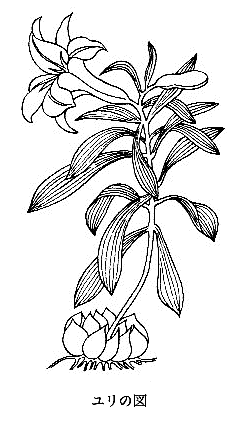
ユリの図
ハナショウブは世界の Iris 属中の王様で、これがわが
邦の特産植物ときているから、大いに鼻を高くしてよい。アメリカでは、花ショウブ会ができているほどなのであるが、その本国のわが
邦では、たいした会もないのはまことに
恥ずかしい
次第であるから、大いに
奮起して、世界に負けないようなハナショウブ学会を設立すべきである、と私は
提唱するに
躊躇しない。
Iris 属中の各種中で、ハナショウブほど一種中（ワンスピーシーズ中）に園芸上の変わり品を有しているものは、世界中に一つもない。これは
独り日本の持つ特長である。なんとなれば、ハナショウブを原産する国は、日本よりほかにはないからである。実にハナショウブの品種は、何百通りもあるではないか。
ハナショウブは、まったく世界に
誇るべき花であるがゆえに、どこか適当な地を選んで一大花ショウブ園を設計し、少なくも十万平方メートルぐらいある園を
設けて、各種類を
網羅するハナショウブを
栽え、大いに西洋人をもビックリさすべきである。いまや観光団が来るという
矢先に、こんな大規模のハナショウブ園を新設するのは、このうえもない意義がある。従来、東京付近にある
堀切、四ツ目などのハナショウブ園は、みな
構えが小さくて問題にならぬ。
花ショウブは、
元来、わが
邦の山野に自生している
野ハナショウブがもとで、それを栽培に栽培を重ねて生まれしめたものである。ゆえに、このノハナショウブは栽培ハナショウブの親である。昔かの
岩代〔福島県の西部〕の
安積の沼のハナショウブを
採り来って、園芸植物化せしめたといわれるが、それはたぶん本当であろう。
しかしハナガツミというものがその原種だというのは、
妄説であると私は信ずる。そしてその歌の、「
陸奥のあさかの沼の花がつみかつ見る人に恋やわたらむ」の花ガツミはマコモ、すなわち
真菰の花を
指したもので、なんらこのハナショウブとは関係はないが、園養のハナショウブを
美化せんがために、
強いてこの歌を引用し、
付会しているのは
笑止の至りである。
ハナショウブの花は
千差万別、数百品もあるであろう。かつて
三好学博士が大学にいる間に、『
花菖蒲図譜』を
著して
公にしたが、まことに
篤志の至りであるといってよい。われらはこの
図譜によって、明治末年前後のハナショウブ
花品を
窺うことができるわけだ。そしてハナショウブを花菖蒲と書くのは、実は不正な書きかたで、ショウブは菖蒲から書いた名ではあれど、ショウブはけっして菖蒲ではない。
ハナショウブの花は、その構造はアヤメやカキツバタと少しも変わりはない。ただ花の器官に大小
広狭、ならびに
色彩の違いがあるばかりだ。すなわち
最外の大きな三
片が
萼片で、次にある
狭き三片が
花弁である。三つの
雄蕊は幅広き
花柱枝の下に隠れて、その
葯は黄色を
呈しており、中央の一
花柱は大きな三
枝に
岐かれて開き、その
末端に
柱頭があり、
虫媒花であるこの花に来る
蝶々が、この柱頭へ花粉を
着けてくれる。
花下に緑色の一
子房があって、直立し花を
戴いている。子房には
小柄があり、その下に大きな二枚の
鞘苞があって花を
擁している。
ハナショウブは、ふつうに水ある
泥地に作ってあるが、しかし水なき畑に
栽えても、
能くできて花が咲く。
宿根性草本で、
地下茎は
横臥している。
茎は直立し少数の
茎葉を
互生し、
初夏の
候、
頂に
派手やかな
大花が咲く。葉は直立せる
剣状で
白緑色を
呈し、
基部は
葉鞘をもって左右に
相抱き、
葉面の中央には
隆起せる
葉脈が
現れている。花が
了わると果実ができ、
熟してそれが
開裂すると、中の
褐色種子が出る。
ハナショウブとは花の咲くショウブの意で、そしてその葉の大きさは、ちょうどショウブと同じくらいである。ところが
元来、菖蒲と言う中国名、すなわち
漢名は、実はしょせんショウブそのものではなく、ショウブは白菖と書かねば正しくない。そして菖蒲と書けば、本当はセキショウのことになる。このセキショウはショウブ属（Acorus）のものではあれど、ずっと小形な草で
溪間に生じている
常緑の
宿根草であって、冬に葉のないショウブとはだいぶ異なっている。
この水に
生えていて
端午の
節句に用うるショウブは、昔はこれをアヤメといった。そして根が長いので、これを
採るのを「アヤメ引く」といった。すなわち
古歌にアヤメグサとあるのは、みなこのショウブであって、
今日いう Iris のアヤメではない。右ショウブをアヤメといっていた昔の時代には、この Iris のアヤメはハナアヤメであった。右 Acorus 属であるアヤメの名が消えて、
今名のショウブとなると同時に、ハナアヤメの名も消えてアヤメとなった。
ハナショウブの
母種、すなわち原種のノハナショウブは、関西地方ではドンドバナと称するらしいが、今その意味が私には
判らない。人によっては、
道祖神の祭りをトンド祭というとのことであるから、あるいはその時分にノハナショウブが咲くからというので、それでノハナショウブをドンドバナというのかもしれない。ドンドとトンドと多少違いはあるから、あるいはドンドバナはトンドバナというのが本当かも知れない。
野州〔栃木県〕日光の
赤沼の原では、そこに多いノハナショウブをアカヌマアヤメといっている。
このノハナショウブは、どこに咲いていても
紅紫色一色で、私はまだ他の色のものに
出逢ったことがない。そして花はなかなか
風情がある。
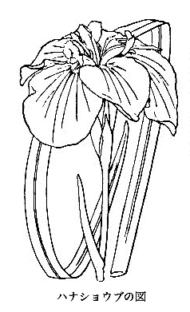
ハナショウブの図
秋の
彼岸ごろに花咲くゆえヒガンバナと呼ばれるが、一般的にはマンジュシャゲの名で通っている。そしてこの名は
梵語の
曼珠沙から来たものだといわれる。その
訳は、
曼珠沙は
朱華の意だとのことである。しかしインドにはこの草は生じていないから、これはその花が赤いから日本の人がこの
曼珠沙をこの草の名にしたもので、これに華を加えれば
曼珠沙華、すなわちマンジュシャゲとなる。そして中国名は
石蒜であって、その葉がニンニクの葉のようであり、同国では
石地に生じているので、それで右のように
石蒜といわれている。
本種はわが
邦いたるところに
群生していて、真赤な花がたくさんに咲くのでことのほか
著しく、だれでもよく知っている。
毒草であるからだれもこれを
愛植している人はなく、いつまでも野の草であるばかりでなく、あのような
美花を開くにもかかわらず、いつも人に
忌み
嫌われる傾向を持っている。
とにかく、眼につく草であるゆえに、諸国で何十もの
方言がある。その中にはシビトバナ、ジゴクバナ、キツネバナ、キツネノタイマツ、キツネノシリヌグイ、ステゴグサ、シタマガリ、シタコジケ、テクサリバナ、ユウレイバナ、ハヌケグサ、ヤクビョウバナなどのいやな名もあるが、またハミズハナミズ、ノダイマツ、カエンソウなどの
雅びな名もある。そしてその学名を Lycoris radiata
Herb. といい、ヒガンバナ科に属する。右種名の radiata は
放射状の意で、それはその花が
花茎の
頂に放射状、すなわち車輪状をなして咲いているからである。
野外で、また山面で、また墓場で、また
土堤などで、花が一時に咲き
揃い、たくさんに群集して咲いている場合はまるで火事場のようである。そしてその咲く時は葉がなく、ただ
花茎が高く直立していて、その
末端に四、五
花が
車座のようになって咲き、
反巻せる
花蓋片は六数、
雄蕊も六数、
雌蕊の
花柱が一本、
花下にある。
下位子房は緑色で各
小梗を
具えている。
ここに
不思議なことには、かくも
盛んに花が咲き
誇るにかかわらず、いっこうに実を結ばないことである。何百何千の花の中には、たまに一つくらい結実してもよさそうなものだが、それが絶対にできなく、その花はただ
無駄に咲いているにすぎない。しかし実ができなくても、その
繁殖にはあえて差しつかえがないのは、しあわせな草である。それは地中にある球根（学術上では
鱗茎と呼ばれる）が、
漸々に分裂して多くの
仔苗を作るからである。ゆえに、この草はいつも群集して
生えている。それはもと一球根から二球根、三球根、しだいに多球根と分かれゆきて集っている結果である。
花が
済むとまもなく数条の長い
緑葉が
出で、それが冬を
越し翌年の三月ごろに
枯死する。そしてその秋、また地中の
鱗茎から
花茎が出て花が咲き、毎年毎年これを繰り返している。かく花の時は葉がなく、葉の時は花がないので、それでハミズハナミズ（葉見ず花見ず）の名がある。
鱗茎は
球形で
黒皮これを包み、中は白色で
層々と
相重なっている。そしてこの層をなしている部分は、実に葉のもとが
鞘を作っていて、その部には
澱粉を
貯え自体の養分となしていること、ちょうど
水仙の球根、ラッキョウの球根などと同様である。そしてそこは広い
筒をなして、たがいに重なっているのである。
近来は
澱粉製造の会社が設立せられ、この球根を集め
砕きそれを製しているが、白色無毒な良好澱粉が製出せられ、食用に
供せられる。
元来、この球根にはリコリンという毒分を含んでいるが、しかしその球根を
搗き
砕き、水に
晒して毒分を流し去れば、食用にすることができるから、この方面からいえば、有用植物の一に
数うることができるわけだ。
この草の生の
花茎を口で
噛んでみると、実にいやな味のするもので、ただちにそれが
毒草であることが知れる。女の子供などは
往々その
茎を
交互に短く
折り、皮で
連なったまま
珠数のようになし、もてあそんでいることがある。
『万葉集』にイチシという植物がある。私はこれをマンジュシャゲだと確信しているが、これは今までだれも
説破したことのない私の新説である。そしてその歌というのは、
路の辺の壱師の花の灼然く、人皆知りぬ我が恋妻を
である。右の歌の
灼然の語は、このマンジュシャゲの燃ゆるがごとき赤い花に対し、実によい形容である。しかしこのイチシという方言は、
今日あえて見つからぬところから
推してみると、これはほんの
狭い一地方に行われた名で、今ははやく
廃れたものであろう。
このマンジュシャゲ、すなわちヒガンバナ、すなわち
石蒜は日本と中国との原産で、その他の国にはない。外国人はたいへんに球根植物を好くので、ずっと以前にこのマンジュシャゲの球根が、多数に海外へ輸出せられたことがあった。
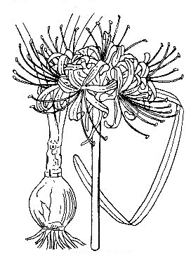
ヒガンバナの図
春に山地に行くと、
往々オキナグサという、ちょっと注意を
惹く草に
出逢う。全体に
白毛を
被っていて白く見え、他の草とはその外観が異っているので、おもしろく
且つ珍しく感ずる。葉は
分裂しており、
株から
花茎が立ち十数センチメートルの高さで花を
着けている。花は
点頭して横向きになっており、日光が当たると
能く開く。花の外面に多くの白毛が生じており、六
片の
花片（実は
萼片であって花弁はなく、萼片が花弁状をなしている）の内面は色が
暗紫赤色を
呈している。
花内に
多雄蕊と
多雌蕊とがある。わが
邦の学者はこの草を漢名の
白頭翁だとしていたが、それはもとより誤りであった。この
白頭翁はオキナグサに
酷似した別の草で、それは中国、朝鮮に産し、まったくわが日本には見ない。ゆえに右日本のオキナグサを
白頭翁に
充てるのは悪い。
さてこの草をなぜオキナグサ、すなわち翁草というかというと、それはその花が
済んで実になると、それが
茎頂に集合し白く
蓬々としていて、あたかも
翁の
白頭に似ているから、それでオキナグサとそう呼ぶのである。この
蓬々となっているのは、その実の
頂にある長い
花柱に
白毛が生じているからである。
この草には右のオキナグサのほかになおたくさんな各地の方言があって、シャグマグサ、オチゴバナ、ネコグサ、ダンジョウドノ、ハグマ、キツネコンコン、ジイガヒゲ、ゼガイソウもその内の名である。右のゼガイソウは、すなわち
善界草で、これは
謡曲にある
赤態を
着けた
善界坊から来た名である。
『万葉集』にこの草を
詠み込んである歌が一つある。すなわちそれは、
芝付の美宇良崎なるねつこぐさ、相見ずあらば我恋ひめやも
である。そしてこのネツコグサは、ネコグサの意で、オキナグサを
指している。花に白毛が多いので、それで猫草といったものだ。
このオキナグサは
山野の
向陽地に生じ、春早く開花するので、
子女などに親しまれ、その花を
採って遊ぶのである。葉は
花後に大きくなる。根は多年生で
肥厚しており、毎年その株の頭部から花、葉が
萌出するのである。
この草はキツネノボタン科に属し、その学名を Anemone cernua
Thunb. とも、また Pulsatilla cernua
Spreng. ともいわれる。そしてその種名の cernua は
点頭、すなわち
傾垂の意で、それはその花の
姿勢に
基づいて名づけたものだ。
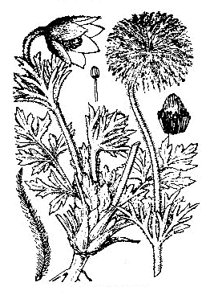
オキナグサの図
シュウカイドウ、すなわち秋海棠はもと中国原産の植物である。昔
寛永年間に日本へ渡り来って、いまは各地に
繁殖しているが、しかし多くは
栽えられてある。たまに寺の後庭などに
野生の姿となっている所があれど、これは
元からの野生ではないけれど、人によってはそこに野生があると疑っていることがある。けれどもそれは、まったく思い違いである。
日本では、この中国名の秋海棠を
音読したシュウカイドウを、そのまま
和名にしているが、さらにヨウラクソウ（
瓔珞草の意）、ナガサキソウ（長崎草の意）の別名があれど、一般にはいわない。
そしてこのヨウラクソウは、花の見立てから来た名、ナガサキソウは、その
渡来した地に
基づき名づけたものである。本品はシュウカイドウ科に属し、Begonia Evansiana
Andr. の学名を有しているが、この Begonia 属のものは温室植物として多くの種類がある。みなその
茎葉に
酸味を含んでいるが、それは
蓚酸である。
秋海棠は
宿根草本であるが、冬は
茎も葉もなく、春に黒ずんだ地中のタマネ、すなわち
球茎から芽が出て来る。ゆえに一度
栽えておくと、年々生じて開花する。
茎は立って六〇〜九〇センチメートルの高さとなり
枝を
分かっている。葉は大形で
葉柄を
具え、
茎に
互生している。その
葉面は心臓形で左右不同の
歪形を
呈し、他の植物の葉とはだいぶ葉形が異なっている。茎と
共に質が
柔らかく、
元来は緑色なれども、赤味を
帯びているから美しい。
茎の上部に
分枝し、さらに
小梗に分かれて
紅色の
美花を
着け
垂れているが、その花には
雄花と
雌花とが
雑居して咲いており、
雄花は
花中に黄色の
葯を球形に集めた
雄蕊があり、
雌花は
花下に三つの
翼ある
子房がある。このように、一
株上に
雄花と
雌花とを持っている植物を、植物学上では一
家花植物と呼んでいる。すなわち
雌雄同株植物である。
中国の書物には、
秋海棠を一に八月春と名づけ、
秋色中の第一であるといい、花は
嬌冶柔媚で真に美人が
粧いに
倦むに同じと
讃美している。また
俗間の伝説では、昔一女子があって人を
懐うてその人至らず
涕涙下って地に
洒ぎ、ついにこの花を生じた。それゆえ、この花は色が
嬌やかで女のごとく、よって
断腸花と名づけたとある。実際にその咲いている花に対せば
淡粧美人のごとく、実にその
艶美を
感得せねば
措かない的のものである。
栽培はきわめて容易で、家の
後ろなどに
栽えておくと年々
能く
繁茂して開花する。その
茎上に
小珠芽ができて地に落ちるから、それから芽が出て
新株が
殖える特性を有している。
日本にはこのシュウカイドウ科の
土産植物は一つもなく、ただあるものは外国
渡来の種類のみである。温室内にあるタイヨウベゴニア（大葉ベゴニア）は、大なる
深緑色葉面に
白斑があって、名高い
粧飾用の一種である。
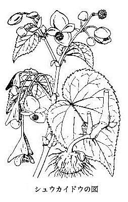
シュウカイドウの図
ドクダミと呼ぶ
宿根草があって、たいていどこでも見られる。
人家のまわりの地にも多く生じており、
摘むといやな一種の
臭気を感ずるので、よく人が知っている。また民間ではこれを薬用に用いるので有名でもある。ドクダミとは
毒痛みの意だともいわれ、またあるいは毒を
矯め
除くの意だともいわれ、身体の毒を追い出すに使われている。また
頭髪を洗うにも使われ、またあるいは
風呂に入れて入浴する人もある。すなわち毒を除くというのが主である。
佐渡ではドクマクリというそうだが、これは毒を追い出す意味であろう。
この草の中国名は

であるが、ドクダミは
今日日本での通名である。これをジュウヤクというのは
薬の意、またシュウサイというのは
菜の意である。草の
臭気に
基づきイヌノヘドクサといい、その
地下茎は白く細長いからジゴクソバの名がある。またボウズグサ、ホトケグサ、ヘビクサ、ドクグサ、シビトバナなどの各地方言があるが、みなこの草を
唾棄したような称で、
畢竟不快なこの草の
臭気を
衆人が
嫌うから、このように呼ぶのである。馬を
飼うに十種の薬の
効能があるから、それで十薬という、といわれているのはよい
加減にこしらえた名で、ジュウヤクとは実は
薬から来た名である。
この草は春に
苗を生ずるが、それは地中に
蔓延せる細長い
地下茎から出て来る。
茎は直立して三〇センチメートル内外となり、心臓状円形で葉裏帯紫色の厚い
柔らかな
全辺葉を
互生し、
葉柄本に
托葉を
具えている。
茎の
梢に直径一〜二センチメートルの白花を開くが、その花は四
花弁があるように見えるけれど、これは花弁を
粧うている葉の変形物なる
苞である。そしてその花の中央から一本の
花軸が立って、それに多数の花を
着けているが、しかしその花はみな裸で
萼もなければ花弁もなく、ただ
黄色葯ある三
雄蕊と一
雌蕊とのみを持っているにすぎなく、まことに
簡単至極な花ではあるが、これに引き
換えその白色四
片の
苞はたいせつな役目を
勤めている。
すなわち目に
着くその白い色を
看板にして、昆虫を招いているのである。昆虫はこの
白看板に
誘われて遠近から花に
来り、
花中に立っている
花軸の花を
媒助してくれるのである。けれども昆虫はただでは
来なく、
利益交換の
蜜が花中にあるので、それでやって
来るのである。この草が群をなして
密生している所では、草の表面にその白花が緑色の葉を背景に点々とたくさんに咲いていて、すこぶる
趣がある。
このドクダミははなはだ抜き去り
難く、したがって
根絶せしめることはなかなか容易でなく、抜いても抜いても
後から
生え出るのである。それもそのはず、地中に細長い
白色地下茎が
縦横に通っていて、
苗を抜く時にそれが切れ、
依然として地中に残り、その残りからまた
苗が
生えるからである。この
地下茎を
蒸せば食用にするに
足るとのこと、また地方によりこれから
澱粉を
採って
食しているところがある。
この草は日本と中国との原産で、もとより
欧米にはない。欧州のある植物園では非常に珍しがって、たいせつに栽培してあるとのことだ。
このドクダミはハンゲショウ科に属し、Houttuynia cordata
Thunb. の学名で世界に通っている。この属名はオランダの学者で日本の植物をも書いたホッタインの
姓を取ったものだ。種名のコルダタは心臓形の意で、その
葉形に
基づいて名づけたわけだ。
 ドクダミの図
ドクダミの図
イカリソウは錨草の意で、その
花形に
基づいて名づけたものである。実際その花はちょうど
錨を
下げたようなおもしろい姿を
呈しているので、この草を庭に
栽えるか、あるいは
盆栽にしておき、花を咲かすと、すこぶる
趣がある。栽培はいたって
簡易で
且つその草もじょうぶであるから、一度
栽えておくと毎年その
時季には花が
眺められる。
春に
新葉と
共に
茎上に短い
花穂をなし、数花が咲くのだが、ちょっと他に類のない
珍しい
花形である。これを地に
栽えるとよく育ち、毎年花が
着く。東京付近のクヌギ林の下などには、諸処に野生しているから、これを採集して
来て
栽えるとよろしい。種類によっては白花のものもあるが、東京近辺のものはみな
淡紫花の品ばかりである。
花には
萼、花弁、
雄蕊、
雌蕊が
備わっていて、植物学上でいう
完備花をなしている。
萼は
元来、八
片よりなっているが、しかしその外側の小さき四片は早く
散落し、内側の四片が残って花弁状を
呈し、
卵状披針形をなして
尖り
平開している。花弁が四個あって、前記
残留の四
萼片と
共に花の主部をなしており、
著しい
長距があって四方に
突き
出で、下に向かって少しく
弯曲している。すなわちこれが
錨の手に当たる部である。
この長い
距の底には、
蜜液が
分泌せられていて、花は昆虫の来るのを待っている。この
虫媒花であるイカリソウの花へは長い
嘴を出す
蝶が訪れ、蜜を吸いに来て頭を
花中へ差し込むときその頭へ花粉を
着けて、これを他の花の
花柱の
柱頭へ伝えるのである。そして花柱のもとにある
子房が、ついに果実となるのである。
花中には四
雄蕊がある。その長い
葯は、
葯胞の
片がもとから上の方に
巻き上がって、黄色の花粉を出している特状がある。このような
葯を、植物学上では
片裂葯と称している。
雌蕊は一本で、緑色の
子房とほとんど同長な
花柱が上に立っており、その
頂に
花頭があって花粉を受けている。
葉は、
地下茎から
出で立つ一本の長い
茎の
頂から一方は
花穂となり、一方はこの葉となって出ていて
長柄があり、それが三
柄に分かれ、さらにそれが三
小柄に分かれて各
小柄ごとに緑色の一
小葉片が
着いている。
葉片は心臓状卵形で
尖り、
葉縁に
針状歯があり、
花後にはその
葉質が
剛くなる。かく
小葉が一
葉に九
片あるので、それで中国でこの草を三
枝九
葉草というのだが、
淫羊
というのがその本名である。しかしこの
淫羊の名は、この類の総称のようである。
右
漢名（中国名のこと）の
淫羊に
就き、中国の説では、羊がこの葉（
）を食えば、一日の間に百
遍も
雌雄相通ずることができる効力を持っていると信ぜられている。昔からこんな伝説が右のとおり中国にあるので、日本でもこれが成分を研究してみた人があったが、なにもそんな
不思議な効力はないとの結論で、たちまちその研究熱が
覚めてしまって、
今日ではだれもその
淫羊説を信ずる
馬鹿者はなくなった。
かのタデ科に属し、
地下茎に
塊根のできる
何首烏すなわちツルドクダミも、一時はそれが性欲に
利くとて、やはり中国の説がもとで大騒ぎをしてみたが、結局はなんの
効も見つからず、
阿呆らしいですんでしまった。
イカリソウはヘビノボラズ科に属し、右の名のほかになおクモキリソウ、カリガネソウ、カナビキソウなどの別名がある。
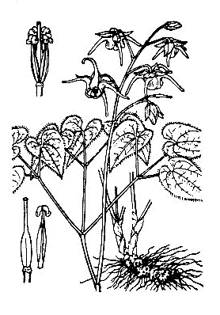
イカリソウの図
［＃改丁］
［＃ページの左右中央］
［＃改ページ］
世間ふつうには果実というといわゆるクダモノであって、リンゴ、カキ、ミカンなどの食用になる実を呼んでいるのであるが、しかし植物学上で果実と称するものは、花の後にできる実をすべて果実といい、通俗とは大いにその呼び方が異なっている。そしてそれはあえて食用になると、ならないとにかかわらず、すべてをそういっている。ゆえにシソ、エゴマの実のようなものでも果実であり、また右のリンゴ、カキなどのようなものでもむろん果実である。
花の中の
子房が
花後に成熟して実になったものは、果実そのものの本体で、すなわち正果実である。
ウメ、モモ、ケシ、ダイコン、エンドウ、ソラマメ、トウモロコシ、イネ、ムギ、ソバ、クリ、クヌギ、ならびにチャの実などがそれである。
また、果実には他の器官が
子房と合体し、共同で一の果実をなしているものもある。すなわちリンゴ、ナシ、キュウリ、カボチャ、メロンなどがそれである。
また、他の器官が主部となって果実をなしているものもあって、そんな場合は、これを
擬果とも
偽果とも
称える。すなわちオランダイチゴ、ヘビイチゴ、イチジク、ノイバラの実などがそれである。
果実の食用となる部分は、果実の種類によってかならずしも
一様ではない。モモ、アンズなどは植物学上でいうところの
中果皮の部を食用とし、リンゴ、ナシなどは実を合成せる
花托部を
食しており、ミカンは
果内の毛を食し、バナナは
果皮を食し、イチジクは変形せる
花軸部を食用に
供している。
いろいろの果実、すなわち実を研究してみるとなかなかおもしろいもので、ふつう
世人が思っているよりほか、意外な事実を発見するものである。次に四つの果実について、おのおのその趣味ある特状を述べてみましょう。
リンゴの果実は、これを
縦に割ったり横に切ったりして見れば、よくその内部の様子がわかるから、そうして
検して見るがよい。
その中央部に五室に分かれた部分があって、その各室内には二個ずつの
褐色な
種子が
並んでいる。そしてその外側に区切りがあって、それが見られる。すなわちこの区切りを
界としてその内部が真の果実であって、この果実部はあえてだれも食わなく捨てるところである。そしてこの区切りと
最外の
外皮のところまでの間が人の
食する部分であるが、この部分は実は本当の果実（中心部をなせる）へ
癒合した付属物で、これは
杯状をなした
花托（すなわち花の
梗の
頂部）であって、それが厚い肉部となっているのである。
これで見ると、このリンゴの実は本当の果実は食われなく、そしてただそのつきものの変形せる
花托、すなわち
花梗の
末端を食っていることになるが、しかしリンゴを食う人々は、植物学者かあるいは学校で教えられた学生かを除くのほかは、だれもその真相を知っているものはほとんどないであろう。
このリンゴは英語でいえばアップルである。
今日の日本人はだれでもこれをリンゴといってすましているが、実をいうとこれはリンゴではなくて、すべからくそれをトウリンゴまたはオオリンゴ、あるいはセイヨウリンゴといわねばならぬものである。そして漢字で書けば苹果でありまた

である。
元来、本当のリンゴは林檎であって、これはその実の直径およそ三センチメートル余りもない小さいもので、あえて市場へは出てこなく、日本では昔その
苗木がわが
邦へ渡って今日
信州〔長野県〕あるいは東北地方にわずかに見るばかりである。
元来日本の原産ではなけれども、これを西洋リンゴのアップルと区別せんがために
和リンゴといわれている。すなわち日本リンゴの意である。
アップルすなわち西洋リンゴは、明治の初年にはじめて西洋から伝わりて
爾後しだいに日本に
拡まり、
今日では東北諸州ならびに信州からそれの良果が
盛んに市場に
出回り、果実店頭を
飾るようにまでなったのである。
アップルを学名でいえば Malus pumila var. domestica であって、前の
和リンゴは Malus asiatica である。
元来リンゴは林檎（和リンゴ）の音であるから本当のリンゴをいう場合は何もいうことはないが、
今日のように西洋リンゴ（トウリンゴ）を単にリンゴと呼ぶのは、実は
当を得たものではないことを知っていなければならない。
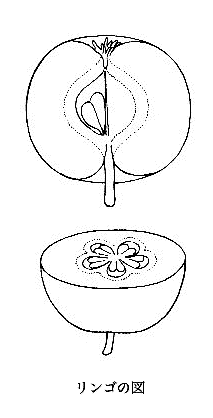
リンゴの図
ミカンすなわち蜜柑は、食用果実として名高く
且つ最もふつうのものであるが、
世人はそのミカンの実のいずれの部分を味わっているのか知らぬ人が多いのであろう。そしてそのミカンは、その毛の中の
汁を味わっている、と聞かされるとみな驚いてしまうだろうが、実際はそうであるからおもしろい。もし万一ミカンの実の中に毛が
生えなかったならば、ミカンは
食えぬ果実としてだれもそれを
一顧もしなかったであろうが、
幸いにも
果中に毛が
生えたばっかりに、ここに上等果実として食用果実界に
君臨しているのである。こうなってみると毛の
価もなかなか
馬鹿にできぬもので、
毛頭その事実に
偽りはない。
ミカンの属は学問上ではシトルス（Citrus）と称し、属中には多数の種類を含んでいる。日本にあるダイダイ、クネンボ、ウンシュウミカン、ナツミカン、コウジ、ユズ、ベニミカン、ヤツシロミカン、レモン、マルブシュカン、トウミカン、コナツミカン、オレンジ、サンボウカン、ザボン、キシュウミカン（コミカン）、ポンカン（
元来台湾産、九州に作っている所がある）などみなその果実の構造は同一で、いずれも
甘汁もしくは
酸汁を含んでいる毛がその食用源をなしているのである。これらミカン類の
貴さも、つまるところは前述のとおりその
果内の毛に
帰するわけだ。
ミカン類の果実は、植物学上果実の分類からいえば
漿果と称すべきであるが、なお精密にいえば
漿果中の
柑橘果と呼ぶべきものである。
ミカン類の果実を
剥いて見ると、表面の皮がまず容易にとれる。その中には俗にいうミカンの
嚢が
輪列していて、これを
離せば個々に分かれる。そしてその
嚢の中に
汁を含んだ
膨大せる毛と種子とがあって、その毛はその
嚢の外方の
壁面から生じており、その種子は内方の底から生じている。つまり右の毛と種子とは反対側から出て、たがいに向き合っているのである。すなわち図上
左隅にその毛の生じ
具合が示され、またそれとならんでその右隅には、成熟した毛が描かれている。
子房がまだ若いときは（左側中央の図）、その各室内にまだ毛は生じていないが、花が終わって後
子房が日増しに大きくなるにつれ、
漸次にその外方の
内壁から毛が生じ始める。そして後には図の下方にあるミカン
半切れ図が示すように、右の毛は
嚢の中いっぱいに
充満する。
右のとおり、その半切れ図で
表してあるように、果実の中は
幾室にも分かれていて、この果実は
実は数個の一室果実から合成せられていることを示している。すなわち一花中に数子房があって、それがたがいに
分立せずして
癒着し、ここに複成子房をなしているのである。ゆえにその
嚢は数個連合してはいるが、これを離せば容易に離れて個々の
嚢となるのである。ただその外側に当たる
外皮が割れ目なしに密に連合しているので、それがミカンの皮をなしている。そして果実全体からいえば、その部が
外果皮と
中果皮とに当たり、
嚢の部分が
内果皮と果実の本部とに当たるのである。
なお図に種子が描いてあるが、この種子はなんら食用とはならず捨て去られるものである。しかしおもしろいことには、一つの種皮の中に
子葉（
貝割葉）、
幼芽、
幼根から
成る
胚が二個もしくは数個あることで、そこでこれを地に
播いておくと一つの種子から二本あるいは数本の
仔苗が
生え出てくることで、これはあまり他に類のないことである。
ミカン類の葉はみな一片ずつになっていて、それが
枝に
互生しているが、しかしミカン類の葉は祖先は三出葉とて三枚の
小葉から
成り、ちょうどカラタチ（キコク）の葉を見るようであったことが
推想せられる。つまり前世界時代のミカン類の葉は、みな三出葉であったのである。その
証拠として
今日あるミカンの
苗にははじめ三出葉が
出で、
次いで一枚の
常葉（単葉）が出ていることがたまに見られ、またザボンの
苗の
葉柄に
幹から
芽出つ葉にもまた三出葉が見られることがあって、つまり遠い遠い前世界の時の葉を出しているのであることは、すこぶる興味ある事実を自然が提供しているのである。
それからいま一つミカン類にとっておもしろいことは、その
枝上にある
刺針、すなわちトゲの件である。そしてこのトゲは、
元来はこの
樹を食害する獣類（それは遠い昔の）などを
防禦するために生じたものであろうが、こんな開けた世にはそんな
害獣もいないので、したがってそのトゲもまったく無用の
長物となっている。
しかし学問上からそのトゲは何であるのかを
究明するのは、すこぶる興味ある問題の一つである。従来日本のある学者は、それは葉の変形したものだと言った。またある学者は、それは枝の変形したものにほかならないと
唱えた。これらの学者のいう説にはなんら
確たる
根拠はなく、ただ外から
観た想像説でしかない。そこで私の実検上からの観察では、これは
葉腋にある芽を
擁しているその
鱗片の
最外のものが大いに増大し、大いに強力となってついにトゲにまで進展発育したものにほかならなく、それはそのトゲの位置がそれをよく暗示しているので、これは動かし
難いものである、と私は自分で発見したこの自説を
固守している
次第だ。
よく
世人はタチバナ（橘の字を当てているが、実は橘はクネンボの漢名であってタチバナではない）ということをいうが、それはタチバナとはどのミカンを
指したものかというと、いま確説をもっていうことはできぬが、たぶん
今日いうキシュウミカン、一名コミカンのようなミカンをいったものではなかろうかと思われる。
かの昔、
田道間守が
常世の国（今どこの国かわからぬが、多分中国の東南方面のいずれかの地であったことが想像せられる）から持って帰って来たというもので、それはむろん食用に供すべきミカンの一種であったわけだ。その当時はむろん日本ではまことに珍しいものであったに
相違ない。そしてそのタチバナの名は、その
常世の国からはるばると
携え
帰朝した前記の
田道間守の名にちなんで、かくタチバナと名づけたとのことである。
珍しくも日本の九州、四国、ならびに本州の山地に
野生しているミカン類の一種に、通常タチバナといっているものがある。黄色の小さい実がなるのだが、果実が小さい上に
汁が少なく種子が大きく、とても食用の果実にはならぬ
劣等至極なミカンである。これを
栽植したものが
時折神社の庭などにあるのだが、そんな場合、多少実が大きく、小さいコウジの実ぐらいになっているものもあれど、食用果実としてはなんら
一顧の価値だもないものである。
世人はタチバナの名に
憧れて勝手にこれを歴史上のタチバナと結びつけ、
貴んでいることがあれど、これはまことに
笑止千万な
僻事である。かの京都の
紫宸殿前の
右近の
橘が
畢竟この類にほかならない。そしてこんな下等な一小ミカンが前記歴史上のタチバナと同じものであるとする所説は、まったく
噴飯ものである。要するに、歴史上のタチバナと日本野生品のタチバナとは、全然関係のないミカンであることを私は
断言する。
前記のとおりわが
邦野生のいわゆるタチバナに、かくタチバナの名を
保たしておくのは
元来間違いであるのみならず、前からすでにある歴史上のタチバナの本物と重複するから、これをヤマトタチバナと改称すると提議したのは、
土佐〔高知県〕出身で当時
柑橘界の第一人者であった田村
利親氏であったが、その後、私はさらにそれを
日本タチバナの名に
改訂した。
なぜそうしたかというと、ザボンの一品に
疾くヤマトタチバナの名称があったからであった。ちなみに右田村氏は、かつて
日向の国〔宮崎県〕において一の
新蜜柑を発見し、これを
小夏蜜柑と名づけて世に出した。すなわち小形の
夏蜜柑の意で、そのとおり
夏蜜柑よりは小形である。そしてその味は夏蜜柑ほど
酸っぱくなくて
甘味を有している。これは四、五月ごろに市場に
現れ、サマー・オレンジと称している。この品は田村氏がはじめて見いだしたので、一に田村
蜜柑とも呼んでいる。
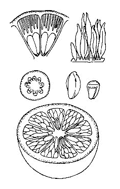
ミカンの図
元来バナナ（Banana）はその実のできるミバショウ（学名は Musa paradisiaca
L. subsp. sapientum
O.
Kuntze）の名であるが、日本民間でふつうにバナナというと、その実（果実）を
指して呼んでいる。しかし西洋でも同様にその実をバナナといっていることもないではないが、これを正しくいうならバナナの実と呼ぶべきである。
さて、果実としてのバナナは
元来そのいずれの部分を
食しているかというと、実はその果実の皮を食しているので、これはけっして
嘘の皮ではなく本当の皮である。もしもバナナにこの
多肉質をなした皮がなかったならば、バナナは果実としてなんの役にも立たないものである。
幸いにも多肉質の皮が存しているために、これが
賞味すべき好果実として登場しているのであるが、しかしこの
委曲を
知悉していた人は
世間に少ないと思う。ゆえにバナナは皮を食うといったら、みな
怪訝な顔をするのであろう。
バナナのミバショウ植物は、見たところ内地にあるバショウそっくりの形状をしている。それもそのはず、その両方が同属（Musa すなわちバショウ属）であるからだ。葉を
検して見ると、バナナの方が
葉質がじょうぶで葉裏が
白粉を
帯びたように
白色を
呈しており、そして
花穂の
苞が
暗赤色であるから、わがバショウの葉の
裏面が緑色で、
花穂の
苞が多少
褐色を
帯びる黄色なのとすぐ区別がつく。
バナナを食うときはだれでもまずその
外皮を
剥ぎ取り、その内部の肉、それはクリーム色をした
香いのよい肉、を
食する。そしてこの皮と肉とは、これは
共にバナナの皮であるが、皮のように
剥げる皮は実はその
外果皮で、これは
繊維質であるから、それが細胞質の肉部すなわち
中果皮内果皮から容易に
剥ぎ取れるわけだ。この繊維質部は食用にならぬが、食用になるのはその次にある細胞質の部のみで、これが前記のとおり
中果皮と
内果皮とである。
元来このバナナが正しい形状を保っていたなら、こんな
食える肉はできずに繊維質の
硬い
果皮のみと種子とが発達するわけだけれど、それがおそろしく変形して厚い多肉部が生じ種子はまったく
不熟に
帰して、ただ果実の中央に
軟らかい黒ずんだ
痕跡を存しているのみですんでいる。すなわちこれは果実の
常態ではなくまったく一の変態で、つまり一の不具である。すなわちこれが不具であってくれたばっかりに、
吾人はこの
珍果を口にする幸運に
遭っているのである。要するに、われらはバナナの中果皮、内果皮なる皮を
食って喜んでいるわけだ。
わが
邦にあるバショウにも花が咲いて果実を結ぶけれど、食うようなものはけっしてできない。このバショウの名は
芭蕉から来たものだけれど、
元来芭蕉はバナナ類の名だから、右のように日本のバショウの名として用いることは反則である。昔の日本の学者は
芭蕉の本物を知らなかったので、そこでこの
芭蕉の字を
濫用し、それが
元でバショウの名がつけられ
今日に
及んでいるのである。いまさら
改めようもないから、まずそのままにしておくよりほか
仕方がない。そしてこのバショウは、
元来日本のものではなく昔中国から渡って来た
外来植物なのである。
中国名の
芭蕉は一に
甘蕉ともいい、実はバナナ、すなわちその果実の味の
甘いバナナ類を総称した名である。ゆえにバナナを
芭蕉といい、
甘蕉といってもよいわけだ。
数年前には
台湾より多量のバナナが日本の内地に輸入せられ、大きな
籠に入れたまま、それが
神戸港などに
陸上げせられた時はまだ緑色であった。それを
仲買人が買って地下室に入れ、数日も置くとはじめて黄色に
熟するので、それからそれが市場の売店へ
氾濫し一般の人々を喜ばせたものだったが、
一朝バナナの宝庫の台湾が失われた後は、前日のバナナ
盛況を見ることはできなくなってしまった。
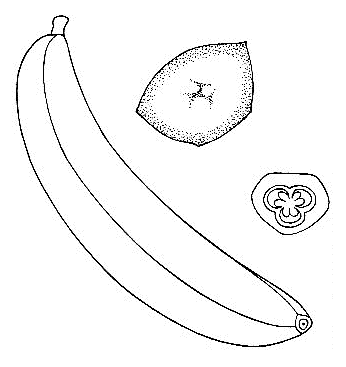
バナナの図
オランダイチゴは
今日市場では、単にイチゴと呼んで通じている。けれども単にイチゴでは
物足りなく、
且つ他のイチゴ（市場には出ぬけれど）とその名が混雑する。人によっては
草苺と呼んでいれど、これも別にクサイチゴがあるから名が重複して困る。オランダイチゴの名は
回りくどくて言いにくいし、他の名は混雑、重複するし困ったものだ。あるいは西洋イチゴといってもよかろうが、いっそ英語のストローベリ（Strawberry）で呼ぶかな、それがご
時勢向きかもしれない。
このオランダイチゴをむずかしく学名で呼ぶとすれば、それは Fragaria chiloensis
Duch. var. ananassa
Bailey である。日本産のモリイチゴ（シロバナヘビイチゴ）もその
姉妹品で、これは Fragaria nipponica
Makino であり、いま一つ同属の日本産は、ノウゴイチゴで、それは Fragaria Iinumae
Makino である。このモリイチゴもノウゴイチゴも
共にその実はオランダイチゴそっくりで、ただ小形であるばかりである。その形、その味、その
香い、なんらオランダイチゴと変わりはない。わが
邦の園芸家がこれに
着目し、大いにその品種の改良を
企てなかったのは、
大なる
落度である。
このオランダイチゴ、すなわちストローベリの実の
食うところは、その
花托が放大して
赤色を
呈し味が甘く、
香いがあって
軟らかい肉質をなしている部分である。人々はその
花托すなわち
茎の
頂部、
換言すればその
茎を
食しているのであって、本当の果実を
食っているのではない（いっしょに口には入って行けども）。されば本当の果実とはどこをいっているかというと、それはその放大せる
花托面に
散布して
付着している細小な
粒状そのもの（図の右の方に描いてあるもの）である。
ゆえにオランダイチゴは食用部と果実とはまったく別で、ただその果実は
花托面に
載っているにすぎない。そして
畢竟このオランダイチゴの実も一つの
擬果に属するのだが、それは野外に多きヘビイチゴの実も同じことだ。このヘビイチゴの実には
甘味がないからだれも
食わない。いやな名がついていれど、もとよりなんら毒はない。ヘビイチゴとは野原で
蛇の
食う
苺の意だ。
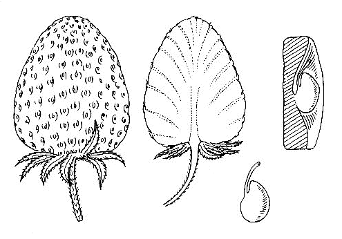
オランダイチゴの図
［＃改ページ］
まず以上で花と実との
概説を
了えた。これは
一気呵成に
筆にまかせて書いたものであるから、まずい点もそこここにあるであろうことを恐縮している。要するに失礼な申し分ではあれど、読者諸君を
草木に対しては
素人であると仮定し、そんな
御方になるべく植物趣味を感じてもらいたさに、わざとこんな文章、それは口でお話するようなしごく通俗な文章を書いてみたのである。もし諸君がこの文章を読んでいささかでも植物趣味を感ぜられ、
且つあわせて多少でも植物知識を得られたならば、筆者の私は大いに満足するところである。
われらを取り巻いている物の中で、植物ほど人生と深い関係を持っているものは少ない。まず世界に植物すなわち草木がなかったなら、われらはけっして生きてはいけないことで、その重要さが
判るではないか。われらの衣食住はその資源を植物に
仰いでいるものが多いことを見ても、その
訳がうなずかれる。
植物に取り囲まれているわれらは、このうえもない幸福である。こんな罪のない、
且つ美点に満ちた植物は、他の何物にも比することのできない
天然の
賜である。実にこれは人生の
至宝であると言っても、けっして
溢言ではないのであろう。
翠色滴たる草木の葉のみを望んでも、だれもその美と
爽快とに打たれないものはあるまい。これが一年中われらの周囲の
景致である。またその上に植物には
紅白紫黄、色とりどりの花が咲き、
吾人の眼を楽しませることひととおりではない。だれもこの天から
授かった花を愛せぬものはあるまい。そしてそれが人間の
心境に影響すれば、
悪人も
善人になるであろう。
荒んだ人も
雅びな人となるであろう。
罪人もその過去を
悔悟するであろう。そんなことなど思いめぐらしてみると、この微妙な植物は一の宗教である、と言えないことはあるまい。
自然の宗教！ その
本尊は植物。なんら
儒教、仏教と異なるところはない。
今日私は
飽くまでもこの自然宗教にひたりながら日々を
愉快に
過ごしていて、なんら不平の気持はなく、心はいつも
平々坦々である。そしてそれがわが健康にも
響いて、今年八十八歳のこの
白髪のオヤジすこぶる元気で、夜も二時ごろまで勉強を続けて
飽くことを知らない。時には夜明けまで仕事をしている。
畢竟これは
平素天然を楽しんでいるおかげであろう。実に天然こそ神である。天然が人生に及ぼす影響は、まことに
至大至重であると言うべきだ。
植物の研究が進むと、ために人間社会を幸福に
導き人生を厚くする。植物を資源とする工業の
勃興は国の
富を
殖やし、したがって国民の生活を
裕かにする。ゆえに国民が植物に関心を持つと持たぬとによって、国の
貧富、したがって人間の貧富が分かれるわけだ。
貧すれば、その間に
罪悪が生じて世が乱れるが、
富めば、
余裕を生じて人間同士の
礼節も
敦くなり、風俗も良くなり、国民の幸福を
招致することになる。
想えば植物の徳大なるかなであると言うべきである。
人間は生きている間が花である。わずかな短かい
浮世である。その間に大いに勉強して身を修め、徳を積み、
智を
磨き、人のために
尽くし、国のために
務め、ないしはまた自分のために楽しみ、善人として一生を幸福に送ることは人間として大いに意義がある。
酔生夢死するほど
馬鹿なものはない。この世に生まれ来るのはただ一度きりであることを思えば、この生きている間をうかうかと
無為に
過ごしてはもったいなく、実に神に対しても申し
訳がないではないか。
私はかつて左のとおり書いたことがあった。
「私は
草木に愛を持つことによって人間愛を
養うことができる、と確信して疑わぬのである。もしも私が
日蓮ほどの
偉物であったなら、きっと私は、草木を
本尊とする宗教を
樹立してみせることができると思っている。私は今
草木を
無駄に
枯らすことをようしなくなった。また私は
蟻一ぴきでも虫などでも、それを
無残に殺すことをようしなくなった。この
慈悲的の心、すなわちその思いやりの心を私はなんで
養い得たか、私はわが愛する草木でこれを
培うた。また私は草木の
栄枯盛衰を
観て、人生なるものを
解し得たと自信している。
これほどまでも
草木は人間の
心事に役立つものであるのに、なぜ
世人はこの
至宝にあまり関心を
払わないであろうか。私はこれを俗に言う『食わず
嫌い』に
帰したい。私は広く四方八方の
世人に向こうて、まあ
嘘と思って一度味わってみてください、と
絶叫したい。私はけっして
嘘言は
吐かない。どうかまずその肉の
一臠を
嘗めてみてください。
みなの人に思いやりの心があれば、世の中は実に美しいことであろう。
相互に
喧嘩も起こらねば、国と国との戦争も起こるまい。この思いやりの心、むずかしく言えば博愛心、慈悲心、相愛心があれば世の中は必ず
静謐で、その人々は
確かに無上の幸福に
浴せんこと、ゆめゆめ疑いあるべからずだ。
世のいろいろの宗教はいろいろの道をたどりてこれを
世人に
説いているが、それを私はあえて
理窟を言わずにただ感情に
訴えて、これを草木で
養いたい、というのが私の宗教心でありまた私の理想である。私は諸処の講演に
臨む時は機会あるごとに、いつもこの主意で学生等に
訓話している」
また私は世人が植物に趣味を持てば次の三
徳があることを主張する。すなわち、
第一に、人間の本性が良くなる。野に山にわれらの周囲に咲き
誇る
草花を見れば、
何人もあの
優しい自然の美に打たれて、
和やかな心にならぬものはあるまい。氷が春風に
融けるごとくに、
怒りもさっそくに
解けるであろう。またあわせて心が詩的にもなり美的にもなる。
第二に、
健康になる。植物に趣味を持って
山野に草や木をさがし求むれば、自然に
戸外の運動が
足るようになる。あわせて
日光浴ができ、
紫外線に
触れ、したがって
知らず
識らずの間に健康が増進せられる。
第三に、人生に
寂寞を感じない。もしも世界中の人間がわれに
背くとも、あえて悲観するには及ばぬ。わが周囲にある
草木は永遠の恋人としてわれに
優しく
笑みかけるのであろう。
惟うに、私はようこそ生まれつき植物に愛を持って来たものだと、またと得がたいその幸福を天に感謝している
次第である。